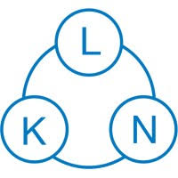

<!DOCTYPE html>
<html lang="en">
<head>
    <meta charset="UTF-8">
    <meta name="viewport" content="width=device-width, initial-scale=1.0">
    <title>5G Research Testbed - TUM</title>
    <meta http-equiv="Cache-Control" content="no-cache, no-store, must-revalidate">
    <!-- Vendored libraries (webui/frontend/vendor/) so the UI works offline /
         without DNS. CDN equivalents kept below for reference:
         https://cdn.tailwindcss.com
         https://unpkg.com/react@18/umd/react.production.min.js
         https://unpkg.com/react-dom@18/umd/react-dom.production.min.js
         https://unpkg.com/@babel/standalone@7.26.4/babel.min.js   (pinned to
           Babel 7: Babel 8 defaults preset-react to the automatic JSX runtime,
           which breaks in-browser classic <script> execution -> blank page)
         https://cdn.socket.io/4.7.2/socket.io.min.js -->
    <script src="./vendor/tailwindcss.js"></script>
    <script src="./vendor/react.production.min.js"></script>
    <script src="./vendor/react-dom.production.min.js"></script>
    <script src="./vendor/babel.min.js"></script>
    <script src="./vendor/socket.io.min.js"></script>
    <style>
        /* System fonts (no Google Fonts fetch — offline-friendly) */
        * { font-family: system-ui, -apple-system, BlinkMacSystemFont, "Segoe UI", sans-serif; }
        .font-mono { font-family: ui-monospace, SFMono-Regular, Menlo, Monaco, Consolas, "Liberation Mono", monospace; }
        ::-webkit-scrollbar { width: 6px; } ::-webkit-scrollbar-track { background: #18181b; } ::-webkit-scrollbar-thumb { background: #3f3f46; border-radius: 3px; }
        @keyframes spin { to { transform: rotate(360deg); } } .animate-spin { animation: spin 1s linear infinite; }
        @keyframes pulse { 0%, 100% { opacity: 1; } 50% { opacity: 0.5; } } .animate-pulse { animation: pulse 2s infinite; }
        .terminal-bg { background: #0c0c0c; }
        .tline { padding: 1px 8px; border-left: 2px solid transparent; }
        .tline:hover { background: rgba(255,255,255,0.02); }
        .tline.ok { border-left-color: #10b981; }
        .tline.err { border-left-color: #ef4444; }
        .tline.warn { border-left-color: #f59e0b; }
        .tline.info { border-left-color: #06b6d4; }
    </style>
</head>
<body class="bg-zinc-950 text-zinc-100">
<div id="root"></div>
<script type="text/babel">
const {useState, useEffect, useCallback, useRef, useMemo} = React;
const API_HOST = window.location.hostname;
const API = `http://${API_HOST}:9090/api`;

const socket = io(`http://${API_HOST}:9090`, {transports:['polling','websocket'], reconnection:true, reconnectionDelay:2000});

/* ─── Testbed IPs — update via configure_ip_from_env.sh ── */
const VPLMN_IP  = "10.162.149.192";   // VPLMN_IP
const HPLMN_IP  = "10.162.149.24";  // HPLMN_IP
const SERVER_IP   = "10.162.149.115";  // Performance-test server
const SERVER_USER = "roaming";         // Performance-test server SSH user

/* ─── useApi Hook with request deduplication ─── */
const useApi = () => {
  const pendingRef = useRef({});
  const call = useCallback(async (ep, opts={}) => {
    const k = `${opts.method||'GET'}_${ep}`;
    // Don't deduplicate if a signal is provided — caller manages lifecycle
    if(!opts.signal && pendingRef.current[k]) return pendingRef.current[k];
    const p = (async () => {
      try {
        const fetchOpts = {headers:{'Content-Type':'application/json'}};
        if(opts.method) fetchOpts.method = opts.method;
        if(opts.body) fetchOpts.body = JSON.stringify(opts.body);
        if(opts.signal) fetchOpts.signal = opts.signal;
        const r = await fetch(`${API}${ep}`, fetchOpts);
        return await r.json();
      } catch(e) { return {success:false, error:e.message}; }
      finally { delete pendingRef.current[k]; }
    })();
    if(!opts.signal) pendingRef.current[k] = p;
    return p;
  }, []);
  return {call};
};

const Icon = ({name, className="w-4 h-4"}) => {
  const P = {
    play:<polygon points="5 3 19 12 5 21 5 3"/>,
    stop:<rect x="3" y="3" width="18" height="18" rx="2"/>,
    refresh:<><polyline points="23 4 23 10 17 10"/><polyline points="1 20 1 14 7 14"/><path d="M3.51 9a9 9 0 0 1 14.85-3.36L23 10M1 14l4.64 4.36A9 9 0 0 0 20.49 15"/></>,
    terminal:<><polyline points="4 17 10 11 4 5"/><line x1="12" y1="19" x2="20" y2="19"/></>,
    server:<><rect x="2" y="2" width="20" height="8" rx="2"/><rect x="2" y="14" width="20" height="8" rx="2"/><circle cx="6" cy="6" r="1"/><circle cx="6" cy="18" r="1"/></>,
    activity:<polyline points="22 12 18 12 15 21 9 3 6 12 2 12"/>,
    zap:<polygon points="13 2 3 14 12 14 11 22 21 10 12 10 13 2"/>,
    check:<><path d="M22 11.08V12a10 10 0 1 1-5.93-9.14"/><polyline points="22 4 12 14.01 9 11.01"/></>,
    x:<><circle cx="12" cy="12" r="10"/><line x1="15" y1="9" x2="9" y2="15"/><line x1="9" y1="9" x2="15" y2="15"/></>,
    chevron:<polyline points="6 9 12 15 18 9"/>,
    home:<><path d="M3 9l9-7 9 7v11a2 2 0 0 1-2 2H5a2 2 0 0 1-2-2z"/><polyline points="9 22 9 12 15 12 15 22"/></>,
    globe:<><circle cx="12" cy="12" r="10"/><line x1="2" y1="12" x2="22" y2="12"/><path d="M12 2a15.3 15.3 0 0 1 4 10 15.3 15.3 0 0 1-4 10 15.3 15.3 0 0 1-4-10 15.3 15.3 0 0 1 4-10z"/></>,
    shield:<path d="M12 22s8-4 8-10V5l-8-3-8 3v7c0 6 8 10 8 10z"/>,
    timer:<><line x1="10" y1="2" x2="14" y2="2"/><line x1="12" y1="14" x2="12" y2="8"/><circle cx="12" cy="14" r="8"/></>,
    layers:<><polygon points="12 2 2 7 12 12 22 7 12 2"/><polyline points="2 17 12 22 22 17"/><polyline points="2 12 12 17 22 12"/></>,
    file:<><path d="M14 2H6a2 2 0 0 0-2 2v16a2 2 0 0 0 2 2h12a2 2 0 0 0 2-2V8z"/><polyline points="14 2 14 8 20 8"/></>,
    folder:<path d="M22 19a2 2 0 0 1-2 2H4a2 2 0 0 1-2-2V5a2 2 0 0 1 2-2h5l2 3h9a2 2 0 0 1 2 2z"/>,
    plus:<><line x1="12" y1="5" x2="12" y2="19"/><line x1="5" y1="12" x2="19" y2="12"/></>,
    edit:<><path d="M11 4H4a2 2 0 0 0-2 2v14a2 2 0 0 0 2 2h14a2 2 0 0 0 2-2v-7"/><path d="M18.5 2.5a2.121 2.121 0 0 1 3 3L12 15l-4 1 1-4 9.5-9.5z"/></>,
    trash:<><polyline points="3 6 5 6 21 6"/><path d="M19 6v14a2 2 0 0 1-2 2H7a2 2 0 0 1-2-2V6m3 0V4a2 2 0 0 1 2-2h4a2 2 0 0 1 2 2v2"/></>,
    settings:<><circle cx="12" cy="12" r="3"/><path d="M19.4 15a1.65 1.65 0 0 0 .33 1.82l.06.06a2 2 0 0 1 0 2.83 2 2 0 0 1-2.83 0l-.06-.06a1.65 1.65 0 0 0-1.82-.33 1.65 1.65 0 0 0-1 1.51V21a2 2 0 0 1-4 0v-.09A1.65 1.65 0 0 0 9 19.4a1.65 1.65 0 0 0-1.82.33l-.06.06a2 2 0 0 1-2.83 0 2 2 0 0 1 0-2.83l.06-.06a1.65 1.65 0 0 0 .33-1.82 1.65 1.65 0 0 0-1.51-1H3a2 2 0 0 1 0-4h.09A1.65 1.65 0 0 0 4.6 9a1.65 1.65 0 0 0-.33-1.82l-.06-.06a2 2 0 0 1 0-2.83 2 2 0 0 1 2.83 0l.06.06a1.65 1.65 0 0 0 1.82.33H9a1.65 1.65 0 0 0 1-1.51V3a2 2 0 0 1 4 0v.09a1.65 1.65 0 0 0 1 1.51 1.65 1.65 0 0 0 1.82-.33l.06.06a2 2 0 0 1 2.83 0 2 2 0 0 1 0 2.83l-.06.06a1.65 1.65 0 0 0-.33 1.82V9c.26.604.852.997 1.51 1H21a2 2 0 0 1 0 4h-.09a1.65 1.65 0 0 0-1.51 1z"/></>,
    alert:<><path d="M10.29 3.86L1.82 18a2 2 0 0 0 1.71 3h16.94a2 2 0 0 0 1.71-3L13.71 3.86a2 2 0 0 0-3.42 0z"/><line x1="12" y1="9" x2="12" y2="13"/><line x1="12" y1="17" x2="12.01" y2="17"/></>,
    lock:<><rect x="3" y="11" width="18" height="11" rx="2" ry="2"/><path d="M7 11V7a5 5 0 0 1 10 0v4"/></>,
    download:<><path d="M21 15v4a2 2 0 0 1-2 2H5a2 2 0 0 1-2-2v-4"/><polyline points="7 10 12 15 17 10"/><line x1="12" y1="15" x2="12" y2="3"/></>,
    radio:<><circle cx="12" cy="12" r="2"/><path d="M16.24 7.76a6 6 0 0 1 0 8.49"/><path d="M7.76 16.24a6 6 0 0 1 0-8.49"/><path d="M19.07 4.93a10 10 0 0 1 0 14.14"/><path d="M4.93 19.07a10 10 0 0 1 0-14.14"/></>,
    upload:<><path d="M21 15v4a2 2 0 0 1-2 2H5a2 2 0 0 1-2-2v-4"/><polyline points="17 8 12 3 7 8"/><line x1="12" y1="3" x2="12" y2="15"/></>,
    key:<><path d="M21 2l-2 2m-7.61 7.61a5.5 5.5 0 1 1-7.778 7.778 5.5 5.5 0 0 1 7.777-7.777zm0 0L15.5 7.5m0 0l3 3L22 7l-3-3m-3.5 3.5L19 4"/></>,
    info:<><circle cx="12" cy="12" r="10"/><line x1="12" y1="16" x2="12" y2="12"/><line x1="12" y1="8" x2="12.01" y2="8"/></>,
  };
  return <svg viewBox="0 0 24 24" fill="none" stroke="currentColor" strokeWidth="2" strokeLinecap="round" strokeLinejoin="round" className={className}>{P[name]}</svg>;
};

const Btn = ({children, onClick, v='primary', sz='md', disabled, loading:l, icon, cls=''}) => {
  const vs = {primary:'bg-cyan-600 hover:bg-cyan-500', success:'bg-emerald-600 hover:bg-emerald-500', danger:'bg-red-600 hover:bg-red-500', secondary:'bg-zinc-700 hover:bg-zinc-600', ghost:'bg-transparent hover:bg-zinc-800 text-zinc-400', purple:'bg-purple-600 hover:bg-purple-500'};
  const szs = {sm:'px-4 py-2 text-sm', md:'px-5 py-2.5 text-base', lg:'px-6 py-3 text-lg'};
  return <button onClick={onClick} disabled={disabled||l} className={`${vs[v]} ${szs[sz]} text-white inline-flex items-center justify-center gap-2 font-medium rounded-lg transition-all disabled:opacity-50 disabled:cursor-not-allowed ${cls}`}>{l?<span className="w-4 h-4 border-2 border-current border-t-transparent rounded-full animate-spin"/>:icon&&<Icon name={icon}/>}{children}</button>;
};

const Card = ({children, className='', title, subtitle, icon, actions}) => (
  <div className={`bg-zinc-900/80 border border-zinc-800 rounded-xl overflow-hidden ${className}`}>
    {(title||actions)&&<div className="flex items-center justify-between px-6 py-5 border-b border-zinc-800/50"><div className="flex items-center gap-3">{icon&&<div className="p-2.5 bg-zinc-800 rounded-lg text-cyan-400"><Icon name={icon} className="w-6 h-6"/></div>}<div>{title&&<h3 className="font-semibold text-lg text-zinc-100">{title}</h3>}{subtitle&&<p className="text-sm text-zinc-500">{subtitle}</p>}</div></div>{actions}</div>}
    <div className="p-6">{children}</div>
  </div>
);

const Badge = ({status}) => {
  const s={running:'bg-emerald-500/20 text-emerald-400', stopped:'bg-red-500/20 text-red-400', partial:'bg-amber-500/20 text-amber-400', completed:'bg-emerald-500/20 text-emerald-400', error:'bg-red-500/20 text-red-400', cancelled:'bg-amber-500/20 text-amber-400'};
  return <span className={`px-3 py-1.5 text-sm font-medium rounded-full ${s[status]||'bg-zinc-500/20 text-zinc-400'}`}>{status==='running'&&<span className="inline-block w-2 h-2 mr-1.5 bg-emerald-400 rounded-full animate-pulse"/>}{(status||'UNKNOWN').toUpperCase()}</span>;
};

const Terminal = ({lines=[], running=false, title="Output", maxH="h-96"}) => {
  const endRef = useRef(null);
  const cRef = useRef(null);
  const [auto, setAuto] = useState(true);
  useEffect(() => { if(auto && endRef.current) endRef.current.scrollIntoView({behavior:"smooth"}); }, [lines.length, auto]);
  const onScroll = () => { if(!cRef.current) return; const {scrollTop,scrollHeight,clientHeight}=cRef.current; setAuto(scrollHeight-scrollTop-clientHeight<50); };
  const cls = (l) => { if(/✅|success|complete|started|ready|OK\b|ESTABLISHED/i.test(l)) return 'ok'; if(/❌|error|fail|fatal/i.test(l)) return 'err'; if(/⚠️|warn/i.test(l)) return 'warn'; if(/🔍|📡|📊|📋|🚀|⏳|🔐|🔄|\[PC1|\[PC2/i.test(l)) return 'info'; return ''; };
  return (
    <div className="rounded-xl border border-zinc-700 overflow-hidden">
      <div className="flex items-center justify-between px-4 py-2 bg-zinc-800 border-b border-zinc-700">
        <div className="flex items-center gap-2">
          <div className="flex gap-1.5"><span className="w-3 h-3 rounded-full bg-red-500/80"/><span className="w-3 h-3 rounded-full bg-amber-500/80"/><span className="w-3 h-3 rounded-full bg-emerald-500/80"/></div>
          <span className="text-xs text-zinc-400 font-mono ml-2">{title}</span>
          {running&&<span className="w-2 h-2 bg-emerald-400 rounded-full animate-pulse ml-2"/>}
        </div>
        <span className="text-xs text-zinc-500">{lines.length} lines</span>
      </div>
      <div ref={cRef} onScroll={onScroll} className={`${maxH} overflow-y-auto terminal-bg p-1 font-mono text-xs`}>
        {lines.length===0?<div className="text-zinc-600 text-center py-8">{running?"Waiting for output...":"No output"}</div>:
          lines.map((l,i)=><div key={i} className={`tline ${cls(l)}`}><span className="text-zinc-600 select-none mr-2">{String(i+1).padStart(4)}</span><span className="text-zinc-300">{l}</span></div>)}
        <div ref={endRef}/>
      </div>
    </div>
  );
};

/* ─── Network delay rules ───────────────────────────────────────────────────
   A rule is the string "location:service:mode=delay[:jitter]" — that is what
   DELAY_RULE_N holds in the config and what lib/automation/config.sh parses. The vocabulary
   below mirrors the dispatch in lib/automation/delays.sh (apply_upf_delay / apply_sepp_delay
   / apply_smf_delay) and the labels in lib/automation/config.sh's interactive menu, so the
   WebUI offers exactly the combinations the shell can actually apply. Note
   lib/automation/config.sh drops a rule it cannot parse *silently*, so anything the picker
   can build must be valid by construction. */
const DELAY_LOCS = [{v:'local', l:'VPLMN (local)'}, {v:'remote', l:'HPLMN (remote)'}];
const DELAY_SERVICES = ['open5gs-nrf','open5gs-scp','open5gs-amf','open5gs-smf','open5gs-upf','open5gs-ausf','open5gs-udm','open5gs-pcf','open5gs-nssf','open5gs-bsf','open5gs-udr','open5gs-sepp'];
// v = mode token, l = short label for the rule list, o = option text with detail.
const DELAY_MODES = {
  'open5gs-upf': [
    {v:'gtpu',  l:'GTP-U (N9)',  o:'GTP-U — N9 user plane (port 2152, works with or without IPsec)'},
    {v:'ipsec', l:'IPsec',       o:'IPsec — ESP protocol'},
    {v:'pfcp',  l:'PFCP (N4)',   o:'PFCP — N4 control plane (port 8805)'},
    {v:'n3',    l:'N3',          o:'N3 — access side (VPLMN only)', localOnly:true},
    {v:'full',  l:'Full',        o:'Full — all traffic on the interface'},
  ],
  'open5gs-sepp': [
    {v:'n32',   l:'N32',         o:'N32 — SEPP-to-SEPP (ports 8080/8081)'},
    {v:'eth0',  l:'Full eth0',   o:'Full eth0 — all container traffic'},
  ],
  'open5gs-smf': [
    {v:'pfcp',  l:'PFCP',        o:'PFCP — SMF-to-UPF (port 8805)'},
    {v:'eth0',  l:'Full eth0',   o:'Full eth0 — all container traffic'},
  ],
};
// Every other NF falls through to the generic container-eth0 branch in lib/automation/delays.sh.
const DELAY_MODES_ANY = [{v:'eth0', l:'Full eth0', o:'Full eth0 — all container traffic'}];
const delayModesFor = (svc, loc) => (DELAY_MODES[svc] || DELAY_MODES_ANY).filter(m => !m.localOnly || loc === 'local');
// Same grammar as validate_delay_format() in lib/automation/delays.sh.
const DELAY_VAL_RE = /^[0-9]+(\.[0-9]+)?(ms|s)$/;
// Same shape as the DELAY_RULE_* regex in lib/automation/config.sh.
const parseDelayRule = (r) => {
  const m = /^(local|remote):([^:]+):([^=]+)=([^:]+)(?::(.+))?$/.exec(r);
  return m ? {loc:m[1], svc:m[2], mode:m[3], delay:m[4], jitter:m[5]||''} : null;
};
const delayRuleKey = (r) => { const d = parseDelayRule(r); return d ? `${d.loc}:${d.svc}:${d.mode}` : r; };
const svcLabel = (s) => s.replace(/^open5gs-/, '').toUpperCase();
const locLabel = (v) => (DELAY_LOCS.find(x=>x.v===v) || {l:v}).l;
const modeLabel = (svc, mode) => ((DELAY_MODES[svc] || DELAY_MODES_ANY).find(m=>m.v===mode) || {l:mode}).l;

/* Form primitives — module scope on purpose. Defined inside ConfigForm they
   were rebuilt on every render, so React saw a new component type each time and
   threw away the whole form's DOM instead of updating it: the page height
   collapsed for an instant and the browser clamped the scroll back to the top
   on every keystroke and dropdown change. They close over nothing, so they
   belong out here. Keep them here. */
const Inp = ({value,onChange,type='text',ph,cls=''}) => <input type={type} value={value} onChange={e=>onChange(e.target.value)} placeholder={ph} className={`w-full px-3 py-2 bg-zinc-800 border border-zinc-700 rounded-lg text-zinc-200 text-sm ${cls}`}/>;
const Sel = ({value,onChange,children}) => <select value={value} onChange={e=>onChange(e.target.value)} className="w-full px-3 py-2 bg-zinc-800 border border-zinc-700 rounded-lg text-zinc-200 text-sm">{children}</select>;
const Tog = ({checked,onChange,label}) => <label className="flex items-center gap-3 cursor-pointer"><div className={`relative w-10 h-5 rounded-full transition-colors ${checked?'bg-cyan-600':'bg-zinc-700'}`} onClick={()=>onChange(!checked)}><div className={`absolute top-0.5 w-4 h-4 bg-white rounded-full transition-transform ${checked?'translate-x-5':'translate-x-0.5'}`}/></div><span className="text-sm text-zinc-300">{label}</span></label>;
const F = ({label,children,cls=''}) => <div className={cls}><label className="block text-xs text-zinc-500 mb-1">{label}</label>{children}</div>;
const Sec = ({title,icon,children}) => <div className="space-y-3"><div className="flex items-center gap-2 text-sm font-medium text-zinc-300 border-b border-zinc-800 pb-2">{icon&&<Icon name={icon} className="w-4 h-4 text-cyan-400"/>}<span>{title}</span></div><div className="space-y-3 pl-1">{children}</div></div>;

const ConfigForm = ({onSave, onRun, disabled}) => {
  const [p, setP] = useState({roaming_mode:'hr', ipsec_enabled:false, ipsec_mode:'', vplmn_security:'tls', hplmn_security:'tls', iterations:10, ping_count:10, ping_target:SERVER_IP, ping_interval:'1', ping_payload_size:'', iteration_delay:2, testbed_restart_interval:0, network_ready_timeout:30, min_network_stabilize_time:10, server_ip:SERVER_IP, server_user:'roaming', server_interface:'ens18', ping_test_enabled:true, download_test_enabled:false, download_test_url:`http://${SERVER_IP}:9000/10MB.bin`, download_test_size_label:'10MB', iperf_test_enabled:false, iperf_server_ip:SERVER_IP, iperf_server_port:'5201', iperf_duration:'10', iperf_parallel:'1', iperf_reverse:false, iperf_udp:false, webpage_test_enabled:false, webpage_browser:'firefox', webpage_iterations:'1', webpage_timeout:'120', webpage_urls:WEBPAGE_PRESETS.map(w=>w.url), n6_delay_enabled:false, n6_delay_value:'50ms', n6_delay_jitter:'', delay_enabled:false, delay_rules:[]});
  const [dr, setDr] = useState({loc:'local', svc:'open5gs-upf', mode:'gtpu', delay:'50ms', jitter:''});
  const [drErr, setDrErr] = useState('');
  const [nu, setNu] = useState('');
  const s = (k,v) => setP(prev=>({...prev,[k]:v}));

  // Locations offered: non-roaming has no HPLMN to delay, matching the
  // interactive menu in lib/automation/config.sh.
  const drLocs = DELAY_LOCS.filter(l => l.v === 'local' || p.roaming_mode !== 'non-roaming');
  const drModes = delayModesFor(dr.svc, dr.loc);
  // Keep mode valid when the service/location change drops the current one
  // (e.g. UPF's N3 exists only on local).
  const setDrField = (k, v) => setDr(prev => {
    const next = {...prev, [k]: v};
    const modes = delayModesFor(next.svc, next.loc);
    if (!modes.some(m => m.v === next.mode)) next.mode = modes[0].v;
    return next;
  });
  const addDelayRule = () => {
    if (!DELAY_VAL_RE.test(dr.delay)) { setDrErr('Delay must look like 50ms or 1.5s.'); return; }
    if (dr.jitter && !DELAY_VAL_RE.test(dr.jitter)) { setDrErr('Jitter must look like 10ms or 1.5s, or be empty.'); return; }
    const rule = `${dr.loc}:${dr.svc}:${dr.mode}=${dr.delay}${dr.jitter ? `:${dr.jitter}` : ''}`;
    // lib/automation/config.sh keys DELAY_CONFIGS on location:service:mode, so a second
    // rule for the same target silently replaces the first. Replace in place
    // here instead, so the list always shows what will actually be applied.
    const key = delayRuleKey(rule);
    const existing = p.delay_rules.findIndex(r => delayRuleKey(r) === key);
    if (existing >= 0) {
      const next = [...p.delay_rules]; next[existing] = rule; s('delay_rules', next);
      setDrErr(`Replaced the existing rule for ${locLabel(dr.loc)} · ${svcLabel(dr.svc)} · ${modeLabel(dr.svc, dr.mode)}.`);
    } else {
      s('delay_rules', [...p.delay_rules, rule]); setDrErr('');
    }
  };

  return (
    <div className="space-y-6">
      <Sec title="Roaming & Security" icon="globe">
        <div className="grid grid-cols-2 gap-3">
          <F label="Roaming Mode"><Sel value={p.roaming_mode} onChange={v=>s('roaming_mode',v)}><option value="hr">Home Routed</option><option value="lbo">Local Breakout</option><option value="non-roaming">Non-Roaming</option></Sel></F>
          <F label="VPLMN Security"><Sel value={p.vplmn_security} onChange={v=>s('vplmn_security',v)}><option value="tls">TLS</option><option value="plain">Plain</option></Sel></F>
        </div>
        {p.roaming_mode!=='non-roaming'&&<F label="HPLMN Security"><Sel value={p.hplmn_security} onChange={v=>s('hplmn_security',v)}><option value="tls">TLS</option><option value="plain">Plain</option></Sel></F>}
        {p.roaming_mode==='hr'&&<><Tog checked={p.ipsec_enabled} onChange={v=>s('ipsec_enabled',v)} label="Enable N9 IPsec"/>
          {p.ipsec_enabled&&<F label="IPsec ESP Mode"><Sel value={p.ipsec_mode} onChange={v=>s('ipsec_mode',v)}><option value="">Current config</option><option value="1">AES-128-GCM</option><option value="2">AES-256-GCM</option><option value="3">AES-128-CBC+SHA256</option><option value="4">AES-256-CBC+SHA256</option><option value="5">NULL+SHA256</option><option value="6">NULL+GMAC</option></Sel></F>}</>}
      </Sec>
      <Sec title="Test Parameters" icon="settings">
        <div className="grid grid-cols-3 gap-3">
          <F label="Iterations"><Inp type="number" value={p.iterations} onChange={v=>s('iterations',parseInt(v)||1)}/></F>
          <F label="Iter Delay (s)"><Inp type="number" value={p.iteration_delay} onChange={v=>s('iteration_delay',parseInt(v)||2)}/></F>
          <F label="Restart Interval"><Inp type="number" value={p.testbed_restart_interval} onChange={v=>s('testbed_restart_interval',parseInt(v)||0)}/></F>
        </div>
        <div className="grid grid-cols-3 gap-3">
          <F label="Server IP"><Inp value={p.server_ip} onChange={v=>s('server_ip',v)}/></F>
          <F label="Server User"><Inp value={p.server_user} onChange={v=>s('server_user',v)}/></F>
          <F label="Server Iface"><Inp value={p.server_interface} onChange={v=>s('server_interface',v)}/></F>
        </div>
      </Sec>
      <Sec title="Test Modes" icon="activity">
        <div className="p-3 bg-zinc-800/50 rounded-lg space-y-3">
          <Tog checked={p.ping_test_enabled} onChange={v=>s('ping_test_enabled',v)} label="Ping Test"/>
          {p.ping_test_enabled&&<div className="grid grid-cols-4 gap-3"><F label="Count"><Inp type="number" value={p.ping_count} onChange={v=>s('ping_count',parseInt(v)||10)}/></F><F label="Target"><Inp value={p.ping_target} onChange={v=>s('ping_target',v)}/></F><F label="Interval"><Inp value={p.ping_interval} onChange={v=>s('ping_interval',v)}/></F><F label="Payload"><Inp value={p.ping_payload_size} onChange={v=>s('ping_payload_size',v)} ph="default"/></F></div>}
        </div>
        <div className="p-3 bg-zinc-800/50 rounded-lg space-y-3">
          <Tog checked={p.download_test_enabled} onChange={v=>s('download_test_enabled',v)} label="Download Test"/>
          {p.download_test_enabled&&<div className="grid grid-cols-2 gap-3"><F label="URL"><Inp value={p.download_test_url} onChange={v=>s('download_test_url',v)} ph={`http://${p.server_ip}:9000/10MB.bin`}/></F><F label="Size Label"><Inp value={p.download_test_size_label} onChange={v=>s('download_test_size_label',v)} ph="10MB"/></F></div>}
        </div>
        <div className="p-3 bg-zinc-800/50 rounded-lg space-y-3">
          <Tog checked={p.iperf_test_enabled} onChange={v=>s('iperf_test_enabled',v)} label="iperf3 Test"/>
          {p.iperf_test_enabled&&<div className="grid grid-cols-3 gap-3"><F label="Server"><Inp value={p.iperf_server_ip} onChange={v=>s('iperf_server_ip',v)} ph={p.server_ip}/></F><F label="Port"><Inp value={p.iperf_server_port} onChange={v=>s('iperf_server_port',v)}/></F><F label="Duration"><Inp value={p.iperf_duration} onChange={v=>s('iperf_duration',v)}/></F></div>}
        </div>
        <div className="p-3 bg-zinc-800/50 rounded-lg space-y-3">
          <Tog checked={p.webpage_test_enabled} onChange={v=>s('webpage_test_enabled',v)} label="Webpage Load Test (Browsertime)"/>
          {p.webpage_test_enabled&&<div className="space-y-3">
            <div className="grid grid-cols-3 gap-3">
              <F label="Browser"><Sel value={p.webpage_browser} onChange={v=>s('webpage_browser',v)}><option value="firefox">Firefox</option><option value="chrome">Chrome</option><option value="edge">Edge</option></Sel></F>
              <F label="Iterations / URL"><Inp type="number" value={p.webpage_iterations} onChange={v=>s('webpage_iterations',v)}/></F>
              <F label="Timeout (s)"><Inp type="number" value={p.webpage_timeout} onChange={v=>s('webpage_timeout',v)} ph="120"/></F>
            </div>
            <F label={`URLs (${p.webpage_urls.length} selected)`}>
              <div className="grid grid-cols-2 gap-1.5">
                {WEBPAGE_PRESETS.map(w=>{const on=p.webpage_urls.includes(w.url);return(
                  <label key={w.url} title={w.url} className="flex items-center gap-2 cursor-pointer text-xs text-zinc-400 hover:text-zinc-200">
                    <input type="checkbox" checked={on} className="accent-cyan-600"
                      onChange={()=>s('webpage_urls', on ? p.webpage_urls.filter(u=>u!==w.url) : [...p.webpage_urls, w.url])}/>
                    <span className="truncate">{w.label}</span>
                  </label>);})}
              </div>
            </F>
            {p.webpage_urls.filter(u=>!WEBPAGE_PRESETS.some(w=>w.url===u)).map(u=>(
              <div key={u} className="flex items-center gap-2"><span className="flex-1 px-3 py-1.5 bg-zinc-800 rounded font-mono text-xs text-cyan-400 truncate" title={u}>{u}</span><button onClick={()=>s('webpage_urls',p.webpage_urls.filter(x=>x!==u))} className="text-zinc-500 hover:text-red-400"><Icon name="x" className="w-4 h-4"/></button></div>))}
            <div className="flex gap-2"><Inp value={nu} onChange={setNu} ph="https://example.com/page" cls="flex-1"/><Btn onClick={()=>{const u=nu.trim();if(u&&!p.webpage_urls.includes(u)){s('webpage_urls',[...p.webpage_urls,u]);setNu('');}}} v="secondary" sz="sm" icon="plus">Add</Btn></div>
            {p.webpage_urls.length===0&&<p className="text-xs text-amber-500">Select at least one URL — the test is skipped with none.</p>}
          </div>}
        </div>
      </Sec>
      <Sec title="N6 Delay (Data Network)" icon="timer">
        <Tog checked={p.n6_delay_enabled} onChange={v=>s('n6_delay_enabled',v)} label="Enable N6 delay"/>
        {p.n6_delay_enabled&&<div className="grid grid-cols-2 gap-3"><F label="Delay"><Inp value={p.n6_delay_value} onChange={v=>s('n6_delay_value',v)} ph="50ms"/></F><F label="Jitter"><Inp value={p.n6_delay_jitter} onChange={v=>s('n6_delay_jitter',v)} ph="10ms"/></F></div>}
      </Sec>
      <Sec title="Network Delay Rules" icon="timer">
        <Tog checked={p.delay_enabled} onChange={v=>s('delay_enabled',v)} label="Enable delays"/>
        {p.delay_enabled&&<div className="space-y-3">
          {p.delay_rules.length>0&&<div className="space-y-1.5">
            {p.delay_rules.map((r,i)=>{const d=parseDelayRule(r);return(
              <div key={i} className="flex items-center gap-3 px-3 py-2 bg-zinc-800 rounded" title={r}>
                {d ? <>
                  <span className="text-xs text-zinc-500 w-28 shrink-0">{locLabel(d.loc)}</span>
                  <span className="text-xs text-zinc-200 w-16 shrink-0">{svcLabel(d.svc)}</span>
                  <span className="text-xs text-zinc-400 flex-1 truncate">{modeLabel(d.svc,d.mode)}</span>
                  <span className="text-xs font-mono text-cyan-400 shrink-0">{d.delay}{d.jitter&&<span className="text-zinc-500"> ± {d.jitter}</span>}</span>
                </> : <span className="flex-1 text-xs text-amber-500">Not a valid rule — the testbed will ignore it: <span className="font-mono">{r}</span></span>}
                <button onClick={()=>{s('delay_rules',p.delay_rules.filter((_,j)=>j!==i));setDrErr('');}} className="text-zinc-500 hover:text-red-400 shrink-0"><Icon name="x" className="w-4 h-4"/></button>
              </div>);})}
          </div>}
          <div className="p-3 bg-zinc-800/50 rounded-lg space-y-2">
            <div className="grid grid-cols-3 gap-2">
              <F label="Location"><Sel value={dr.loc} onChange={v=>setDrField('loc',v)}>{drLocs.map(l=><option key={l.v} value={l.v}>{l.l}</option>)}</Sel></F>
              <F label="Service"><Sel value={dr.svc} onChange={v=>setDrField('svc',v)}>{DELAY_SERVICES.map(x=><option key={x} value={x}>{svcLabel(x)}</option>)}</Sel></F>
              <F label="Traffic"><Sel value={dr.mode} onChange={v=>setDrField('mode',v)}>{drModes.map(m=><option key={m.v} value={m.v}>{m.o}</option>)}</Sel></F>
            </div>
            <div className="grid grid-cols-3 gap-2 items-end">
              <F label="Delay"><Inp value={dr.delay} onChange={v=>{setDrField('delay',v);setDrErr('');}} ph="50ms"/></F>
              <F label="Jitter (optional)"><Inp value={dr.jitter} onChange={v=>{setDrField('jitter',v);setDrErr('');}} ph="none"/></F>
              <Btn onClick={addDelayRule} v="secondary" sz="sm" icon="plus">Add rule</Btn>
            </div>
            {drErr&&<p className="text-xs text-amber-400">{drErr}</p>}
            <p className="text-xs text-zinc-600">Writes <span className="font-mono text-zinc-500">{`${dr.loc}:${dr.svc}:${dr.mode}=${dr.delay||'…'}${dr.jitter?`:${dr.jitter}`:''}`}</span></p>
          </div>
        </div>}
      </Sec>
      <div className="flex gap-3 pt-4 border-t border-zinc-800">
        {onSave&&<Btn onClick={()=>onSave(p)} v="secondary" sz="lg" icon="file" disabled={disabled}>Save Config</Btn>}
        {onRun&&<Btn onClick={()=>onRun(p)} v="primary" sz="lg" icon="play" disabled={disabled}>Run Now</Btn>}
      </div>
    </div>
  );
};

const AutomationPage = () => {
  const {call} = useApi();
  const [mode, setMode] = useState('form');
  const [configs, setConfigs] = useState([]);
  const [selConfig, setSelConfig] = useState('');
  const [output, setOutput] = useState([]);
  const [job, setJob] = useState(null);
  const [msg, setMsg] = useState(null);
  const [saveName, setSaveName] = useState('');
  const [busy, setBusy] = useState(false);
  const outputRef = useRef([]);

  useEffect(() => { loadConfigs(); checkStatus(); }, []);
  useEffect(() => {
    const h = d => {
      if(d.job_type && d.job_type !== 'automation') return;
      outputRef.current = [...outputRef.current, d.line]; setOutput([...outputRef.current]);
    };
    const c = d => {
      if(d.job_type && d.job_type !== 'automation') return;
      setJob(p=>p?{...p,status:d.status}:null); setBusy(false);
    };
    socket.on('script_output', h); socket.on('script_completed', c);
    return ()=>{socket.off('script_output',h);socket.off('script_completed',c);};
  }, []);

  const loadConfigs = async () => { const r = await call('/configs'); if(r.success) setConfigs(r.files||[]); };
  const checkStatus = async () => {
    const r = await call('/scripts/status');
    if(r.success && r.job && r.job.type === 'automation') {
      setJob(r.job);
      if(r.job.status==='running') {
        setBusy(true); setMode('running');
        const o = await call('/scripts/output?lines=5000');
        if(o.success) { outputRef.current = o.lines||[]; setOutput(outputRef.current); }
      }
    }
  };

  const runConfig = async (cf) => {
    if(busy) return;
    setBusy(true); outputRef.current=[]; setOutput([]); setMsg(null);
    const r = await call('/scripts/automation/run',{method:'POST',body:{config_file:cf}});
    if(r.success){setJob({id:r.job_id,status:'running',type:'automation'});setMode('running');} else {setMsg({t:'error',m:r.error||'Failed to start'});setBusy(false);}
  };
  const runInline = async (params) => {
    if(busy) return;
    setBusy(true); outputRef.current=[]; setOutput([]); setMsg(null);
    const r = await call('/scripts/automation/run-inline',{method:'POST',body:params});
    if(r.success){setJob({id:r.job_id,status:'running',type:'automation'});setMode('running');} else {setMsg({t:'error',m:r.error||'Failed to start'});setBusy(false);}
  };
  const saveConfig = async (params) => {
    const fn = saveName || `config_${Date.now()}.conf`;
    const r = await call('/configs',{method:'POST',body:{filename:fn,params}});
    if(r.success){setMsg({t:'ok',m:`Saved: ${r.filename}`});loadConfigs();setSaveName('');} else setMsg({t:'error',m:r.error||'Failed to save'});
  };
  const cancelJob = async () => { await call('/scripts/cancel',{method:'POST'}); setJob(p=>p?{...p,status:'cancelled'}:null); setBusy(false); };

  const isRunning = job?.status==='running';
  return (
    <div className="space-y-6">
      <div className="flex gap-3 flex-wrap">
        <Btn onClick={()=>setMode('form')} v={mode==='form'?'primary':'secondary'} icon="edit" disabled={isRunning}>New Test</Btn>
        <Btn onClick={()=>{setMode('config');loadConfigs();}} v={mode==='config'?'primary':'secondary'} icon="file" disabled={isRunning}>Run Config File</Btn>
        {(isRunning||output.length>0)&&<Btn onClick={()=>setMode('running')} v={mode==='running'?'primary':'secondary'} icon="terminal">Output{isRunning&&<span className="w-2 h-2 bg-emerald-400 rounded-full animate-pulse ml-1"/>}</Btn>}
      </div>
      {msg&&<div className={`p-3 rounded-lg text-sm ${msg.t==='ok'?'bg-emerald-500/10 text-emerald-400 border border-emerald-500/30':'bg-red-500/10 text-red-400 border border-red-500/30'}`}>{msg.m}</div>}
      {/* Hidden rather than unmounted for the same reason the tab is: going
          Form -> Output to watch a run, then back to tweak and re-run, must
          not wipe what was just configured. */}
      <div className={mode==='form' ? '' : 'hidden'}>
        <Card title="Configure & Run Automation" subtitle="Creates config and runs testbed_automation.sh --config" icon="zap">
          <div className="mb-4 flex items-center gap-3">
            <label className="text-xs text-zinc-500">Save as:</label>
            <input value={saveName} onChange={e=>setSaveName(e.target.value)} placeholder="my_test.conf" className="px-3 py-1.5 bg-zinc-800 border border-zinc-700 rounded-lg text-zinc-200 text-sm w-64"/>
          </div>
          <ConfigForm onSave={saveConfig} onRun={runInline} disabled={busy}/>
        </Card>
      </div>
      {mode==='config'&&(
        <Card title="Run Existing Config" subtitle="Select a .conf file from configs/" icon="folder">
          <div className="space-y-4">
            <Btn onClick={loadConfigs} v="ghost" sz="sm" icon="refresh">Refresh</Btn>
            {configs.length===0?<p className="text-zinc-500 text-sm">No config files found in configs/</p>:
              <div className="space-y-2">{configs.map(c=>(
                  <div key={c.filename} className={`flex items-center justify-between p-3 rounded-lg border cursor-pointer transition-all ${selConfig===c.filename?'bg-cyan-500/10 border-cyan-500/50':'bg-zinc-800/50 border-zinc-700 hover:border-zinc-600'}`} onClick={()=>setSelConfig(c.filename)}>
                    <div><div className="font-mono text-sm text-zinc-200">{c.filename}</div><div className="text-xs text-zinc-500">{c.summary} • {(c.size/1024).toFixed(1)}KB</div></div>
                    <Btn onClick={(e)=>{e.stopPropagation();runConfig(c.filename);}} v="success" sz="sm" icon="play" disabled={busy}>Run</Btn>
                  </div>
              ))}</div>}
          </div>
        </Card>
      )}
      {mode==='running'&&(
        <div className="space-y-4">
          <div className="flex items-center justify-between">
            <div className="flex items-center gap-3">
              <Badge status={job?.status||'unknown'}/>
              {job?.config?.config_file&&<span className="text-sm text-zinc-400 font-mono">{job.config.config_file}</span>}
            </div>
            {isRunning?<Btn onClick={cancelJob} v="danger" sz="sm" icon="stop">Cancel</Btn>:
              <Btn onClick={()=>{outputRef.current=[];setOutput([]);setJob(null);setMode('form');}} v="secondary" sz="sm" icon="edit">New Test</Btn>}
          </div>
          <Terminal lines={output} running={isRunning} title={`testbed_automation.sh`} maxH="h-[500px]"/>
        </div>
      )}
    </div>
  );
};

const BatchRunnerPage = () => {
  const {call} = useApi();
  const [configs, setConfigs] = useState([]);
  const [selected, setSelected] = useState([]);
  const [iterations, setIterations] = useState(1);
  const [reloadInterval, setReloadInterval] = useState(10);
  const [runAll, setRunAll] = useState(false);
  const [output, setOutput] = useState([]);
  const [job, setJob] = useState(null);
  const [mode, setMode] = useState('config');
  const [msg, setMsg] = useState(null);
  const [busy, setBusy] = useState(false);
  const outputRef = useRef([]);

  useEffect(() => { loadConfigs(); checkStatus(); }, []);
  useEffect(() => {
    const h = d => {
      if(d.job_type && d.job_type !== 'batch_runner') return;
      outputRef.current = [...outputRef.current, d.line]; setOutput([...outputRef.current]);
    };
    const c = d => {
      if(d.job_type && d.job_type !== 'batch_runner') return;
      setJob(p=>p?{...p,status:d.status}:null); setBusy(false);
    };
    socket.on('script_output', h); socket.on('script_completed', c);
    return ()=>{socket.off('script_output',h);socket.off('script_completed',c);};
  }, []);

  const loadConfigs = async () => { const r = await call('/configs'); if(r.success) setConfigs(r.files||[]); };
  const checkStatus = async () => {
    const r = await call('/scripts/status');
    if(r.success && r.job && r.job.status==='running' && r.job.type==='batch_runner') {
      setJob(r.job); setBusy(true); setMode('running');
      const o = await call('/scripts/output?lines=5000');
      if(o.success) { outputRef.current = o.lines||[]; setOutput(outputRef.current); }
    }
  };

  const runBatch = async () => {
    if(busy) return;
    setMsg(null); setBusy(true); outputRef.current=[]; setOutput([]); setMode('running');
    const body = { iterations, reload_interval: reloadInterval };
    if(runAll) body.run_all = true;
    else body.config_files = selected;
    const r = await call('/scripts/batch-runner/run',{method:'POST',body});
    if(r.success) { setJob({id:r.job_id,status:'running',type:'batch_runner'}); }
    else { setMsg({t:'error',m:r.error||'Failed to start batch runner'}); setBusy(false); setMode('config'); }
  };

  const cancelJob = async () => { await call('/scripts/cancel',{method:'POST'}); setJob(p=>p?{...p,status:'cancelled'}:null); setBusy(false); };
  const toggleSel = (f) => setSelected(p=>p.includes(f)?p.filter(x=>x!==f):[...p,f]);
  const isRunning = job?.status==='running';

  return (
    <div className="space-y-6">
      <div className="flex gap-3">
        <Btn onClick={()=>{setMode('config');loadConfigs();}} v={mode==='config'?'primary':'secondary'} icon="settings" disabled={isRunning}>Configure</Btn>
        {(isRunning||output.length>0)&&<Btn onClick={()=>setMode('running')} v={mode==='running'?'primary':'secondary'} icon="terminal">Output{isRunning&&<span className="w-2 h-2 bg-emerald-400 rounded-full animate-pulse ml-1"/>}</Btn>}
      </div>
      {msg&&<div className="p-3 rounded-lg text-sm bg-red-500/10 text-red-400 border border-red-500/30">{msg.m}</div>}
      {mode==='config'&&(
        <div className="grid gap-6 lg:grid-cols-2">
          <Card title="Batch Runner Settings" subtitle="batch_runner.sh configuration" icon="layers">
            <div className="space-y-4">
              <div className="grid grid-cols-2 gap-3">
                <div><label className="block text-xs text-zinc-500 mb-1">Runner Iterations</label><input type="number" value={iterations} onChange={e=>setIterations(parseInt(e.target.value)||1)} className="w-full px-3 py-2 bg-zinc-800 border border-zinc-700 rounded-lg text-zinc-200 text-sm"/></div>
                <div><label className="block text-xs text-zinc-500 mb-1">gtp5g Reload Interval</label><input type="number" value={reloadInterval} onChange={e=>setReloadInterval(parseInt(e.target.value)||0)} className="w-full px-3 py-2 bg-zinc-800 border border-zinc-700 rounded-lg text-zinc-200 text-sm"/></div>
              </div>
              <label className="flex items-center gap-3 cursor-pointer">
                <input type="checkbox" checked={runAll} onChange={e=>{setRunAll(e.target.checked);if(e.target.checked)setSelected([]);}} className="w-4 h-4"/>
                <span className="text-sm text-zinc-300">Run all configs (--all flag, uses main.conf)</span>
              </label>
              <div className="pt-3 border-t border-zinc-800">
                <Btn onClick={runBatch} v="primary" sz="lg" icon="layers" disabled={busy || (!runAll&&selected.length===0)}>
                  Start Batch Runner {!runAll&&selected.length>0&&`(${selected.length} configs)`}
                </Btn>
              </div>
            </div>
          </Card>
          <Card title="Config Files" subtitle={`${configs.length} available`} icon="folder" actions={<Btn onClick={loadConfigs} v="ghost" sz="sm" icon="refresh">Refresh</Btn>}>
            <div className="space-y-2 max-h-96 overflow-y-auto">
              {configs.map(c=>(
                <label key={c.filename} className={`flex items-center gap-3 p-3 rounded-lg border cursor-pointer transition-all ${selected.includes(c.filename)?'bg-cyan-500/10 border-cyan-500/50':'bg-zinc-800/50 border-zinc-700 hover:border-zinc-600'} ${runAll?'opacity-50':''}`}>
                  <input type="checkbox" checked={selected.includes(c.filename)} onChange={()=>toggleSel(c.filename)} disabled={runAll} className="w-4 h-4"/>
                  <div><div className="font-mono text-sm text-zinc-200">{c.filename}</div><div className="text-xs text-zinc-500">{c.summary}</div></div>
                </label>
              ))}
              {configs.length===0&&<p className="text-zinc-500 text-sm text-center py-4">No configs found</p>}
            </div>
          </Card>
        </div>
      )}
      {mode==='running'&&(
        <div className="space-y-4">
          <div className="flex items-center justify-between">
            <Badge status={job?.status||'unknown'}/>
            {isRunning?<Btn onClick={cancelJob} v="danger" sz="sm" icon="stop">Cancel</Btn>:
              <Btn onClick={()=>{outputRef.current=[];setOutput([]);setJob(null);setMode('config');setMsg(null);}} v="secondary" sz="sm" icon="settings">Configure</Btn>}
          </div>
          <Terminal lines={output} running={isRunning} title="batch_runner.sh" maxH="h-[600px]"/>
        </div>
      )}
    </div>
  );
};

const ResultsPage = () => {
  const {call} = useApi();
  const [files, setFiles] = useState([]);
  const [selected, setSelected] = useState(null);
  const [data, setData] = useState(null);
  useEffect(()=>{loadFiles();}, []);
  const loadFiles = async () => { const r = await call('/results'); if(r.success) setFiles(r.files||[]); };
  const loadResult = async (f) => { setSelected(f); const r = await call(`/results/${f}`); if(r.success) setData(r.data); };
  const deleteResult = async (f) => { await call(`/results/${f}`,{method:'DELETE'}); loadFiles(); if(selected===f){setSelected(null);setData(null);} };
  const S = data?.summary;
  return (
    <div className="grid gap-6 lg:grid-cols-3">
      <Card title="Results Files" icon="folder" actions={<Btn onClick={loadFiles} v="ghost" sz="sm" icon="refresh">Refresh</Btn>}>
        <div className="space-y-2 max-h-[600px] overflow-y-auto">
          {files.map(f=>(
            <div key={f.filename} className={`p-3 rounded-lg border cursor-pointer group ${selected===f.filename?'bg-cyan-500/10 border-cyan-500/50':'bg-zinc-800/50 border-zinc-700 hover:border-zinc-600'}`} onClick={()=>loadResult(f.filename)}>
              <div className="flex justify-between"><span className="font-mono text-xs text-zinc-200">{f.filename}</span>
                <button onClick={(e)=>{e.stopPropagation();deleteResult(f.filename);}} className="text-zinc-600 hover:text-red-400 opacity-0 group-hover:opacity-100"><Icon name="trash" className="w-3 h-3"/></button></div>
              <div className="text-xs text-zinc-500 mt-1">{f.summary} • {(f.size/1024).toFixed(1)}KB</div>
            </div>
          ))}
          {files.length===0&&<p className="text-zinc-500 text-sm text-center py-4">No results</p>}
        </div>
      </Card>
      <div className="lg:col-span-2">
        {data?(
          <Card title={selected} subtitle={data.test_info?.roaming_mode?.toUpperCase()} icon="activity">
            <div className="space-y-4">
              <div className="grid grid-cols-2 md:grid-cols-4 gap-3">
                <div className="p-3 bg-zinc-800/50 rounded-lg"><div className="text-xs text-zinc-500">Iterations</div><div className="text-lg font-mono text-emerald-400">{S?.successful_iterations||'?'}/{S?.total_iterations||'?'}</div></div>
                <div className="p-3 bg-zinc-800/50 rounded-lg"><div className="text-xs text-zinc-500">Avg Total</div><div className="text-lg font-mono text-cyan-400">{S?.timing_total_ms?.avg?.toFixed(0)||'?'}ms</div></div>
                <div className="p-3 bg-zinc-800/50 rounded-lg"><div className="text-xs text-zinc-500">Ping Loss</div><div className="text-lg font-mono">{S?.overall_packet_loss?.toFixed(1)||'?'}%</div></div>
                <div className="p-3 bg-zinc-800/50 rounded-lg"><div className="text-xs text-zinc-500">Avg RTT</div><div className="text-lg font-mono text-cyan-400">{S?.ping_rtt_ms?.avg?.toFixed(2)||'?'}ms</div></div>
              </div>
              <div className="p-3 bg-zinc-800/50 rounded-lg"><div className="text-xs text-zinc-500 mb-2">Test Info</div>
                <div className="grid grid-cols-2 gap-2 text-xs">
                  <div><span className="text-zinc-500">Roaming:</span> <span className="text-zinc-300">{data.test_info?.roaming_mode||'?'}</span></div>
                  <div><span className="text-zinc-500">IPsec:</span> <span className="text-zinc-300">{data.test_info?.n9_ipsec_enabled?'ON':'OFF'}</span></div>
                  <div><span className="text-zinc-500">Security:</span> <span className="text-zinc-300">{data.test_info?.local_security||'?'}/{data.test_info?.remote_security||'?'}</span></div>
                  <div><span className="text-zinc-500">Script:</span> <span className="text-zinc-300">v{data.test_info?.script_version||'?'}</span></div>
                </div>
              </div>
              {data.iterations&&<div className="space-y-1 max-h-64 overflow-y-auto">
                {data.iterations.map((it,i)=>(
                  <div key={i} className={`flex items-center justify-between p-2 rounded text-xs ${it.status==='success'?'bg-emerald-500/10':'bg-red-500/10'}`}>
                    <span>Iter {it.iteration} {it.ue_ip&&`(${it.ue_ip})`} <span className="text-cyan-400">{it.timing_ms?.total}ms</span></span>
                    {it.ping_results&&<span className="text-zinc-400">{it.ping_results.successful}/{it.ping_results.total} • {it.ping_results.avg_ms}ms</span>}
                  </div>
                ))}
              </div>}
            </div>
          </Card>
        ):<Card title="Select a Result" icon="activity"><p className="text-zinc-500">Click a result file to view details</p></Card>}
      </div>
    </div>
  );
};

/* ─── Plots Page ────────────────────────────────────────────────────────────
   Bar-chart comparison across ALL result files (same data as the Results tab),
   rendered server-side by plotting.py and served as PNG. */
// Module-level cache so loaded plots survive tab switches. The Plots tab is
// mounted only while active ({tab==='plots'&&<PlotsPage/>}), so component state
// is discarded on leave; this cache keeps the images until a full page reload.
// Plots are rendered server-side and persisted to disk on an explicit
// "Regenerate plots"; on load we read those stored PNGs (fast, no re-render).
let _plotsCache = {metrics: [], plots: {}, errors: {}, fileCount: 0, generatedAt: null, selected: null, loaded: false, error: null};

const PlotsPage = () => {
  const {call} = useApi();
  const [metrics, setMetrics] = useState(_plotsCache.metrics);
  const [selected, setSelected] = useState(_plotsCache.selected);
  const [plots, setPlots] = useState(_plotsCache.plots);       // metric_id -> data-URL (only metrics with data)
  const [plotErrors, setPlotErrors] = useState(_plotsCache.errors); // metric_id -> reason (no data / render error)
  const [fileCount, setFileCount] = useState(_plotsCache.fileCount);
  const [generatedAt, setGeneratedAt] = useState(_plotsCache.generatedAt); // when the stored plots were last built
  const [building, setBuilding] = useState(false);
  const [error, setError] = useState(_plotsCache.error);      // page-level error (no files / plotting unavailable)

  const pickMetric = (id) => { setSelected(id); _plotsCache.selected = id; };

  // Apply a plots payload (from either /plots/cached or /plots/generate-all) to
  // state + the module cache. Selection is kept if it still has a plot.
  const apply = useCallback((r) => {
    const p = r.plots || {}, e = r.errors || {}, fc = r.file_count || 0, ga = r.generated_at || null;
    setPlots(p); setPlotErrors(e); setFileCount(fc); setGeneratedAt(ga);
    setSelected(prev => {
      const sel = (prev && p[prev]) ? prev : (Object.keys(p)[0] || null);
      _plotsCache.selected = sel;
      return sel;
    });
    Object.assign(_plotsCache, {plots: p, errors: e, fileCount: fc, generatedAt: ga, loaded: true, error: null});
  }, []);

  // Load the plots stored on disk without re-rendering (page-load fast path).
  const loadCached = useCallback(async () => {
    setError(null); _plotsCache.error = null;
    const r = await call('/plots/cached');
    if (r?.success) apply(r);
    else {
      const msg = r?.error || 'Failed to load plots';
      setError(msg); Object.assign(_plotsCache, {loaded: true, error: msg});
    }
  }, [call, apply]);

  // Re-render every metric on the backend, overwrite the stored PNGs, and show
  // the fresh set. Only batch_runner results are included server-side.
  const regenerate = useCallback(async () => {
    setBuilding(true); setError(null); _plotsCache.error = null;
    const r = await call('/plots/generate-all', {method: 'POST'});
    if (r?.success) apply(r);
    else {
      const msg = r?.error || 'Failed to regenerate plots';
      setPlots({}); setPlotErrors({}); setFileCount(0); setGeneratedAt(null); setSelected(null); setError(msg);
      Object.assign(_plotsCache, {plots: {}, errors: {}, fileCount: 0, generatedAt: null, selected: null, loaded: true, error: msg});
    }
    setBuilding(false);
  }, [call, apply]);

  useEffect(() => {
    (async () => {
      let ms = _plotsCache.metrics;
      if (!ms.length) {
        const r = await call('/plots/metrics');
        if (r?.success) { ms = r.metrics || []; _plotsCache.metrics = ms; setMetrics(ms); }
        else { const msg = r?.error || 'Failed to load metrics'; setError(msg); _plotsCache.error = msg; return; }
      }
      if (!_plotsCache.loaded) loadCached();   // read stored plots on first visit; reuse cache on later visits
    })();
  }, []);

  const groups = {};
  metrics.forEach(m => { (groups[m.group] = groups[m.group] || []).push(m); });
  const selMeta = metrics.find(m => m.id === selected);
  const selLabel = selMeta?.label || 'Plot';
  const selImg = selected ? plots[selected] : null;

  return (
    <div className="grid gap-6 lg:grid-cols-3">
      <Card title="Metrics" subtitle={fileCount ? `${fileCount} batch_runner result${fileCount===1?'':'s'}` : 'Batch-runner results only'} icon="layers">
        <button onClick={regenerate} disabled={building}
          className="w-full mb-1.5 inline-flex items-center justify-center gap-2 px-3 py-2 rounded-lg text-sm bg-cyan-500/10 border border-cyan-500/40 text-cyan-300 hover:bg-cyan-500/20 disabled:opacity-50">
          <Icon name="refresh" className={`w-3.5 h-3.5 ${building?'animate-spin':''}`}/>{building ? 'Regenerating plots…' : 'Regenerate plots'}
        </button>
        <p className="text-xs text-zinc-500 mb-3 text-center">
          {building ? 'Rendering from the latest results…'
            : generatedAt ? `Stored plots — generated ${new Date(generatedAt).toLocaleString()}`
            : 'No stored plots yet — click Regenerate'}
        </p>
        <div className="space-y-4 max-h-[600px] overflow-y-auto">
          {Object.entries(groups).map(([g, ms]) => (
            <div key={g}>
              <div className="text-xs uppercase tracking-wide text-zinc-500 mb-1.5">{g}</div>
              <div className="space-y-1">
                {ms.map(m => {
                  const has = !!plots[m.id];
                  const reason = plotErrors[m.id];
                  return (
                    <button key={m.id} onClick={() => has && pickMetric(m.id)} disabled={!has || building}
                      title={has ? '' : (reason || 'No data yet')}
                      className={`w-full text-left px-3 py-2 rounded-lg text-sm border transition-colors ${selected === m.id ? 'bg-cyan-500/10 border-cyan-500/50 text-cyan-300' : has ? 'bg-zinc-800/50 border-zinc-700 text-zinc-300 hover:border-zinc-600' : 'bg-zinc-900/40 border-zinc-800 text-zinc-600 cursor-not-allowed'}`}>
                      {m.label} <span className="text-xs text-zinc-500">[{m.unit}]</span>
                      {!has && !building && <span className="text-xs text-zinc-600 float-right">no data</span>}
                    </button>
                  );
                })}
              </div>
            </div>
          ))}
          {metrics.length === 0 && !error && <p className="text-zinc-500 text-sm text-center py-4">Loading metrics…</p>}
          {error && metrics.length === 0 && <div className="p-2.5 rounded-lg text-xs bg-red-500/10 text-red-400 border border-red-500/30">{error}</div>}
        </div>
      </Card>
      <div className="lg:col-span-2">
        <Card title={selImg ? selLabel : 'Plots'} icon="activity">
          {building && <p className="text-cyan-400 text-sm">Regenerating all plots from batch_runner results…</p>}
          {!building && error && <div className="p-2.5 rounded-lg text-sm bg-red-500/10 text-red-400 border border-red-500/30">{error}</div>}
          {!building && !error && !selImg && (
            generatedAt
              ? <p className="text-zinc-500 text-sm">Pick a metric on the left. Plots are read from the stored set (X-axis: roaming mode, color: visited PLMN, hatch: DN location). Click <span className="text-cyan-300">Regenerate plots</span> after new results.</p>
              : <p className="text-zinc-500 text-sm">No plots have been generated yet. Click <span className="text-cyan-300">Regenerate plots</span> to build them from the latest batch_runner results and store them for fast loading.</p>
          )}
          {!building && selImg && (
            <div className="space-y-3">
              <div className="bg-white rounded-lg p-2 overflow-auto"></div>
              <a href={selImg} download={`${selected}_bar_plot.png`} className="inline-flex items-center gap-2 px-3 py-1.5 rounded text-xs bg-zinc-700 hover:bg-zinc-600 text-zinc-200"><Icon name="download" className="w-3.5 h-3.5"/>Download PNG</a>
            </div>
          )}
        </Card>
      </div>
    </div>
  );
};

/* ─── IPsec Control Page ───────────────────────────────────────────────────
   Drives esp_config.sh for cipher changes — same flow the user runs from CLI.
   Output streams via the existing job manager / websocket events.
*/
const CIPHER_OPTIONS = [
  {v: '1', l: 'AES-128-GCM (AEAD)',                     warn: false},
  {v: '2', l: 'AES-256-GCM (AEAD)',                     warn: false},
  {v: '3', l: 'AES-128-CBC + HMAC-SHA256',              warn: false},
  {v: '4', l: 'AES-256-CBC + HMAC-SHA256',              warn: false},
  {v: '5', l: 'NULL + SHA256  (NO ENCRYPTION)',         warn: true},
  {v: '6', l: 'NULL + GMAC    (NO ENCRYPTION)',         warn: true},
];

const IPsecPage = ({localStatus, remoteStatus, onRefresh}) => {
  const {call} = useApi();
  const [bothBusy, setBothBusy] = useState(false);
  const [selectedMode, setSelectedMode] = useState('1');
  const [scriptInfo, setScriptInfo] = useState(null);
  const [output, setOutput] = useState([]);
  const [job, setJob] = useState(null);
  const [msg, setMsg] = useState(null);
  const outputRef = useRef([]);
  const [busy, setBusy] = useState(false);

  // Initial load: script info + current job
  useEffect(() => {
    (async () => {
      const info = await call('/ipsec/esp-script-info');
      if(info?.success) setScriptInfo(info);
      const r = await call('/scripts/status');
      if(r?.success && r.job && r.job.type === 'ipsec_cipher') {
        setJob(r.job);
        if(r.job.status === 'running') {
          setBusy(true);
          const o = await call('/scripts/output?lines=5000');
          if(o?.success) { outputRef.current = o.lines || []; setOutput(outputRef.current); }
        }
      }
    })();
  }, []);

  // Listen for streaming output — only for our job_type
  useEffect(() => {
    const onOut = d => {
      if(d.job_type !== 'ipsec_cipher') return;
      outputRef.current = [...outputRef.current, d.line]; setOutput([...outputRef.current]);
    };
    const onDone = d => {
      if(d.job_type !== 'ipsec_cipher') return;
      setJob(p => p ? {...p, status: d.status, exit_code: d.exit_code} : null);
      setBusy(false);
      // Refresh both peer statuses after script completes
      setTimeout(() => onRefresh && onRefresh(), 1000);
    };
    socket.on('script_output', onOut);
    socket.on('script_completed', onDone);
    return () => { socket.off('script_output', onOut); socket.off('script_completed', onDone); };
  }, [onRefresh]);

  const applyCipher = async () => {
    if(busy) return;
    if(!selectedMode) { setMsg({t:'error', m:'Pick a cipher mode'}); return; }
    const opt = CIPHER_OPTIONS.find(o => o.v === selectedMode);
    if(opt?.warn) {
      if(!window.confirm(`⚠️ Mode ${selectedMode} has NO ENCRYPTION (${opt.l}).\nTraffic will be readable on the wire.\n\nProceed?`)) return;
    }
    setMsg(null); outputRef.current = []; setOutput([]); setBusy(true);
    const r = await call('/ipsec/apply-cipher', {method:'POST', body:{mode: selectedMode}});
    if(r?.success) {
      setJob({id: r.job_id, status:'running', type:'ipsec_cipher', config:{mode: r.mode, mode_name: r.mode_name}});
    } else {
      setMsg({t:'error', m: r?.error || 'Failed to start esp_config.sh'});
      setBusy(false);
    }
  };

  const cancelJob = async () => {
    await call('/scripts/cancel', {method:'POST'});
    setJob(p => p ? {...p, status:'cancelled'} : null);
    setBusy(false);
  };

  // IPsec is considered "on" if either peer's strongSwan service is running.
  const ipsecOn = !!(localStatus?.ipsec?.service_running || remoteStatus?.ipsec?.service_running);

  // Single control: start (or stop) IPsec on BOTH peers at once.
  const bothAction = async () => {
    if(bothBusy || isRunning) return;
    const act = ipsecOn ? 'stop' : 'start';
    setBothBusy(true);
    await Promise.all([
      call(`/ipsec/local/${act}`,  {method:'POST'}),
      call(`/ipsec/remote/${act}`, {method:'POST'}),
    ]);
    await onRefresh();
    setBothBusy(false);
  };

  const isRunning = job?.status === 'running';
  const scriptMissing = scriptInfo && !scriptInfo.found;

  // Detect current cipher across peers — if both match a known mode, pre-select it
  const detectedCipherMode = useMemo(() => {
    const lm = localStatus?.ipsec?.active_esp?.mode;
    const rm = remoteStatus?.ipsec?.active_esp?.mode;
    if(lm && rm && lm === rm) return lm;
    return null;
  }, [localStatus, remoteStatus]);

  const PeerPanel = ({loc, status, name, ip}) => {
    const running = status?.service_running;
    const established = status?.tunnel_established;
    const activeEsp = status?.active_esp;
    return (
      <div className={`p-5 rounded-xl border-2 ${established?'bg-purple-500/10 border-purple-500/50':running?'bg-amber-500/10 border-amber-500/50':'bg-zinc-800/50 border-zinc-700'}`}>
        <div className="flex items-center justify-between mb-3">
          <div>
            <div className="font-semibold text-lg">{name}</div>
            <div className="text-sm text-zinc-500 font-mono">{ip}</div>
          </div>
          <Badge status={established?'running':running?'partial':'stopped'}/>
        </div>

        {activeEsp?.proposal && (
          <div className="mb-3 px-3 py-2 bg-zinc-900/60 border border-zinc-700/50 rounded-lg">
            <div className="text-[10px] uppercase tracking-wide text-zinc-500 mb-0.5">/etc/ipsec.conf esp=</div>
            <div className="font-mono text-sm text-cyan-400">
              {activeEsp.proposal}{activeEsp.mode && <span className="text-zinc-500 ml-2">— mode {activeEsp.mode}</span>}
            </div>
          </div>
        )}

        {status?.tunnel_info?.esp_active && (
          <div className="flex items-center gap-2 text-purple-400 text-sm">
            <Icon name="shield" className="w-4 h-4"/>
            ESP active
            {status.tunnel_info.esp_sa_count ? ` (${status.tunnel_info.esp_sa_count} SAs)` : ''}
          </div>
        )}
      </div>
    );
  };

  return (
    <div className="space-y-6">
      {/* Cipher selection card */}
      <Card title="ESP Cipher Mode" subtitle="Runs esp_config.sh on PC1, PC2 via SSH, then restarts both" icon="key" actions={<Btn onClick={onRefresh} v="ghost" sz="sm" icon="refresh">Refresh</Btn>}>
        {scriptMissing && (
          <div className="mb-4 p-3 rounded-lg text-sm bg-red-500/10 text-red-400 border border-red-500/30">
            <div className="font-medium mb-1">⚠️ esp_config.sh not found on backend host</div>
            <div className="text-xs text-red-300/80 font-mono">Looked at:</div>
            <ul className="text-xs text-red-300/80 font-mono list-disc pl-5">
              {scriptInfo?.candidates?.map((p,i)=><li key={i}>{p}</li>)}
            </ul>
            <div className="text-xs mt-1">Place esp_config.sh at one of those paths (or update <span className="font-mono">esp_config_script_candidates</span> in the backend) and reload.</div>
          </div>
        )}
        {scriptInfo?.found && (
          <div className="mb-4 text-xs text-zinc-500 font-mono">
            script: <span className="text-zinc-400">{scriptInfo.path}</span>
          </div>
        )}

        <div className="grid gap-4 md:grid-cols-3">
          <div className="md:col-span-2">
            <label className="block text-xs text-zinc-500 mb-1.5">Cipher Mode</label>
            <select value={selectedMode} onChange={e=>setSelectedMode(e.target.value)} disabled={isRunning||scriptMissing}
                    className="w-full px-3 py-2.5 bg-zinc-800 border border-zinc-700 rounded-lg text-zinc-200 text-sm disabled:opacity-50">
              {CIPHER_OPTIONS.map(o => (
                <option key={o.v} value={o.v}>{o.v} — {o.l}{o.warn ? '  ⚠️' : ''}</option>
              ))}
            </select>
            {detectedCipherMode && (
              <div className="mt-2 text-xs text-zinc-500">
                Currently configured on both peers: <span className="text-emerald-400 font-mono">mode {detectedCipherMode}</span>
                {detectedCipherMode !== selectedMode && <button onClick={()=>setSelectedMode(detectedCipherMode)} className="ml-2 text-cyan-400 hover:underline">use this</button>}
              </div>
            )}
            {!detectedCipherMode && localStatus?.ipsec?.active_esp?.mode && remoteStatus?.ipsec?.active_esp?.mode && (
              <div className="mt-2 text-xs text-amber-400">
                ⚠️ Peers currently differ: VPLMN=mode {localStatus.ipsec.active_esp.mode}, HPLMN=mode {remoteStatus.ipsec.active_esp.mode}. Apply a mode to sync.
              </div>
            )}
          </div>
          <div className="flex items-end">
            {isRunning ? (
              <Btn onClick={cancelJob} v="danger" sz="lg" icon="stop" cls="w-full">Cancel</Btn>
            ) : (
              <Btn onClick={applyCipher} v="purple" sz="lg" icon="zap" disabled={scriptMissing||busy} cls="w-full">Apply & Restart Both</Btn>
            )}
          </div>
        </div>

        {msg && (
          <div className={`mt-4 p-3 rounded-lg text-sm ${msg.t==='ok'?'bg-emerald-500/10 text-emerald-400 border border-emerald-500/30':'bg-red-500/10 text-red-400 border border-red-500/30'}`}>{msg.m}</div>
        )}

        <div className="mt-4 p-3 bg-zinc-800/40 border border-zinc-700/50 rounded-lg text-xs text-zinc-400 flex items-start gap-2">
          <Icon name="alert" className="w-4 h-4 flex-shrink-0 text-amber-400 mt-0.5"/>
          <span>This invokes <span className="font-mono text-zinc-300">sudo bash esp_config.sh &lt;mode&gt;</span>. The script edits <span className="font-mono">/etc/ipsec.conf</span> on both peers (PC2 via SSH), flushes XFRM state, and restarts strongSwan on both sides. Takes ~10s.</span>
        </div>
      </Card>

      {/* Live output from esp_config.sh */}
      {(isRunning || output.length > 0) && (
        <div className="space-y-3">
          <div className="flex items-center justify-between">
            <div className="flex items-center gap-3">
              <Badge status={job?.status||'unknown'}/>
              {job?.config?.mode_name && <span className="text-sm text-zinc-400 font-mono">mode {job.config.mode}: {job.config.mode_name}</span>}
            </div>
            {!isRunning && (
              <Btn onClick={()=>{outputRef.current=[];setOutput([]);setJob(null);}} v="ghost" sz="sm" icon="x">Clear</Btn>
            )}
          </div>
          <Terminal lines={output} running={isRunning} title="esp_config.sh" maxH="h-[400px]"/>
        </div>
      )}

      {/* IPsec tunnel control + per-peer status */}
      <Card title="IPsec Tunnel" subtitle="Start or stop the tunnel on both peers with one control (cipher unchanged)" icon="shield"
            actions={<Btn onClick={onRefresh} v="ghost" sz="sm" icon="refresh">Refresh</Btn>}>
        <Btn onClick={bothAction} v={ipsecOn?'danger':'success'} sz="lg" icon={ipsecOn?'stop':'play'}
             loading={bothBusy} disabled={isRunning} cls="w-full mb-6">
          {ipsecOn ? 'Stop IPsec (both peers)' : 'Start IPsec (both peers)'}
        </Btn>
        <div className="grid gap-6 md:grid-cols-2">
          <PeerPanel loc="local"  status={localStatus?.ipsec}  name="VPLMN (PC1)" ip={VPLMN_IP}/>
          <PeerPanel loc="remote" status={remoteStatus?.ipsec} name="HPLMN (PC2)" ip={HPLMN_IP}/>
        </div>
        {localStatus?.ipsec?.tunnel_established && remoteStatus?.ipsec?.tunnel_established && (
          <div className="mt-6 p-4 bg-emerald-500/10 border border-emerald-500/30 rounded-lg flex items-center gap-3 text-emerald-400">
            <Icon name="check" className="w-5 h-5"/>
            <span className="font-medium">IPsec tunnel established between both networks</span>
          </div>
        )}
      </Card>
    </div>
  );
};

/* ─── Post-Quantum IKE Evaluation Page (local Dockerized testbed) ──────────
   Drives ike_eval_docker.sh LOCALLY — the PQ testbed lives on the same
   machine as the WebUI backend (CONFIG.post_quantum), so no SSH is
   involved; the script runs via sudo. It benchmarks IKE handshakes between
   two local Docker containers — pq-vplmn (initiator) ⇄ pq-hplmn
   (responder). Uses the existing job manager with job_type='pq_eval' so
   output doesn't bleed into the other tabs; docker compose actions
   (up / down / build / certs) stream through the same channel via
   /api/pq/docker. Result JSONs are read from <project>/results/json on
   demand via /api/pq/results — the JSON schema is identical to the 2-VM
   testbed, so the charts and run-grouping logic below are unchanged.

   Renders SVG charts inline so results plot dynamically as they arrive (the
   page polls /api/pq/results every 3s while a job is running).
*/

// ── Lightweight inline SVG charts (no external deps) ──────────────────────
const PQ_COLORS = {
  total:   '#10b981',  // emerald — total wire RTT
  sa_init: '#06b6d4',  // cyan — IKE_SA_INIT phase
  auth:    '#a78bfa',  // violet — IKE_AUTH phase
  // axis:    '#52525b',  // zinc-600
  // text:    '#a1a1aa',  // zinc-400
  // text_dim:'#71717a',  // zinc-500
  // grid:    '#27272a',  // zinc-800
  axis:    '#71717a',  // zinc-500 instead of zinc-600
  text:    '#d4d4d8',  // zinc-300 instead of zinc-400
  text_dim:'#a1a1aa',  // zinc-400 instead of zinc-500
  grid:    '#3f3f46',  // zinc-700 instead of zinc-800
};

const TimingTimeline = ({iters, w=620, h=240, title='Per-iteration wire RTT'}) => {
  const pts = (iters || []).filter(r => r && typeof r.total_wire_us === 'number');
  if (pts.length === 0) return <div className="text-zinc-600 text-xs text-center py-8">No iteration timing data.</div>;
  const max = Math.max(...pts.map(r => Math.max(r.total_wire_us || 0, r.ike_sa_init_rtt_us || 0, r.ike_auth_rtt_us || 0)));
  const padL = 56, padR = 16, padT = 26, padB = 36;
  const iW = w - padL - padR;
  const iH = h - padT - padB;
  const x = i => padL + (pts.length === 1 ? iW/2 : (i / (pts.length - 1)) * iW);
  const y = v => padT + iH - ((v || 0) / max) * iH;
  const linePath = (key) => 'M ' + pts.map((r, i) => `${x(i).toFixed(1)} ${y(r[key] || 0).toFixed(1)}`).join(' L ');
  const yticks = [0, 0.25, 0.5, 0.75, 1].map(f => f * max);
  return (
    <svg viewBox={`0 0 ${w} ${h}`} className="w-full h-auto" preserveAspectRatio="xMidYMid meet">
      <text x={w/2} y={16} fill={PQ_COLORS.text} fontSize="11" textAnchor="middle" fontWeight="500">{title}</text>
      {yticks.map((v, i) => (
        <g key={i}>
          <line x1={padL} y1={y(v)} x2={w - padR} y2={y(v)} stroke={PQ_COLORS.grid} strokeWidth="0.5"/>
          <text x={padL - 6} y={y(v) + 3} fill={PQ_COLORS.text_dim} fontSize="9" textAnchor="end">{(v/1000).toFixed(1)}</text>
        </g>
      ))}
      <text x={14} y={padT + iH/2} fill={PQ_COLORS.text_dim} fontSize="9" textAnchor="middle" transform={`rotate(-90 14 ${padT + iH/2})`}>RTT (ms)</text>
      <line x1={padL} y1={padT} x2={padL} y2={padT + iH} stroke={PQ_COLORS.axis}/>
      <line x1={padL} y1={padT + iH} x2={w - padR} y2={padT + iH} stroke={PQ_COLORS.axis}/>
      <path d={linePath('ike_sa_init_rtt_us')} fill="none" stroke={PQ_COLORS.sa_init} strokeWidth="1.5" strokeDasharray="3,3" opacity="0.85"/>
      <path d={linePath('ike_auth_rtt_us')} fill="none" stroke={PQ_COLORS.auth} strokeWidth="1.5" strokeDasharray="3,3" opacity="0.85"/>
      <path d={linePath('total_wire_us')} fill="none" stroke={PQ_COLORS.total} strokeWidth="2"/>
      {pts.map((r, i) => (
        <circle key={i} cx={x(i)} cy={y(r.total_wire_us || 0)} r="2.5" fill={PQ_COLORS.total}>
          <title>{`Iter ${r.iteration ?? i+1}\ntotal: ${((r.total_wire_us||0)/1000).toFixed(2)}ms\nSA_INIT: ${((r.ike_sa_init_rtt_us||0)/1000).toFixed(2)}ms\nAUTH: ${((r.ike_auth_rtt_us||0)/1000).toFixed(2)}ms`}</title>
        </circle>
      ))}
      <text x={(padL + (w - padR))/2} y={h - 8} fill={PQ_COLORS.text_dim} fontSize="9" textAnchor="middle">iteration</text>
      <g transform={`translate(${w - padR - 215}, ${padT + 5})`}>
        <line x1="0" y1="0" x2="14" y2="0" stroke={PQ_COLORS.total} strokeWidth="2"/>
        <text x="18" y="3" fill={PQ_COLORS.total} fontSize="10">total</text>
        <line x1="55" y1="0" x2="69" y2="0" stroke={PQ_COLORS.sa_init} strokeWidth="1.5" strokeDasharray="3,3"/>
        <text x="73" y="3" fill={PQ_COLORS.sa_init} fontSize="10">SA_INIT</text>
        <line x1="125" y1="0" x2="139" y2="0" stroke={PQ_COLORS.auth} strokeWidth="1.5" strokeDasharray="3,3"/>
        <text x="143" y="3" fill={PQ_COLORS.auth} fontSize="10">AUTH</text>
      </g>
    </svg>
  );
};

const PQHistogram = ({values, w=400, h=180, bins=20, color='#06b6d4', label='Distribution', unit='ms'}) => {
  const vs = (values || []).filter(v => typeof v === 'number' && isFinite(v));
  if (vs.length < 2) return <div className="text-zinc-600 text-xs text-center py-6">Not enough data points for distribution.</div>;
  const min = Math.min(...vs), max = Math.max(...vs);
  const range = max - min || 1;
  const binCount = Math.min(bins, Math.max(5, Math.floor(vs.length / 2)));
  const binSize = range / binCount;
  const counts = Array(binCount).fill(0);
  vs.forEach(v => {
    const idx = Math.min(binCount - 1, Math.max(0, Math.floor((v - min) / binSize)));
    counts[idx]++;
  });
  const maxC = Math.max(...counts);
  const padL = 38, padR = 12, padT = 22, padB = 30;
  const iW = w - padL - padR;
  const iH = h - padT - padB;
  const barW = iW / binCount;
  const conv = v => unit === 'ms' ? (v/1000).toFixed(1) : v.toFixed(0);
  const mean = vs.reduce((a,b)=>a+b, 0) / vs.length;
  const meanX = padL + ((mean - min) / range) * iW;
  return (
    <svg viewBox={`0 0 ${w} ${h}`} className="w-full h-auto" preserveAspectRatio="xMidYMid meet">
      <text x={w/2} y={14} fill={PQ_COLORS.text} fontSize="11" textAnchor="middle" fontWeight="500">{label}</text>
      {counts.map((c, i) => {
        const bH = (c / maxC) * iH;
        return (
          <rect key={i} x={padL + i * barW + 0.5} y={padT + iH - bH} width={Math.max(0, barW - 1)} height={bH} fill={color} opacity="0.8">
            <title>{`${conv(min + i * binSize)}–${conv(min + (i+1) * binSize)}: ${c}`}</title>
          </rect>
        );
      })}
      <line x1={meanX} y1={padT} x2={meanX} y2={padT + iH} stroke="#fbbf24" strokeWidth="1" strokeDasharray="2,2" opacity="0.8"/>
      <text x={meanX + 3} y={padT + 8} fill="#fbbf24" fontSize="8">μ {conv(mean)}</text>
      <line x1={padL} y1={padT + iH} x2={w - padR} y2={padT + iH} stroke={PQ_COLORS.axis}/>
      <text x={padL} y={h - 8} fill={PQ_COLORS.text_dim} fontSize="9">{conv(min)}{unit}</text>
      <text x={w - padR} y={h - 8} fill={PQ_COLORS.text_dim} fontSize="9" textAnchor="end">{conv(max)}{unit}</text>
      <text x={padL - 6} y={padT + 4} fill={PQ_COLORS.text_dim} fontSize="9" textAnchor="end">{maxC}</text>
      <text x={padL - 6} y={padT + iH + 3} fill={PQ_COLORS.text_dim} fontSize="9" textAnchor="end">0</text>
    </svg>
  );
};

const PQComparisonChart = ({results, w=620, h=300}) => {
  // results: array of {filename, data}
  const items = (results || []).filter(r => r.data && r.data.total_wire_us && typeof r.data.total_wire_us.mean === 'number');
  if (items.length === 0) return null;
  const stats = items.map(r => ({
    label: r.data.config_name || r.filename.replace(/\.json$/i, '').replace(/^\d+_ike_/, ''),
    mean: r.data.total_wire_us.mean,
    p95: r.data.total_wire_us.p95 || r.data.total_wire_us.max || r.data.total_wire_us.mean,
    median: r.data.total_wire_us.median || r.data.total_wire_us.mean,
  }));
  const max = Math.max(...stats.flatMap(s => [s.mean, s.p95]));
  const padL = 60, padR = 20, padT = 30, padB = 78;
  const iW = w - padL - padR;
  const iH = h - padT - padB;
  const groupW = iW / stats.length;
  const barW = Math.min(36, Math.max(12, groupW * 0.32));
  const yticks = [0, 0.25, 0.5, 0.75, 1].map(f => f * max);
  return (
    <svg viewBox={`0 0 ${w} ${h}`} className="w-full h-auto" preserveAspectRatio="xMidYMid meet">
      <text x={w/2} y={16} fill={PQ_COLORS.text} fontSize="11" textAnchor="middle" fontWeight="500">Total wire RTT — comparison across configs ({items.length})</text>
      {yticks.map((v, i) => {
        const yy = padT + iH - (v / max) * iH;
        return (
          <g key={i}>
            <line x1={padL} y1={yy} x2={w - padR} y2={yy} stroke={PQ_COLORS.grid} strokeWidth="0.5"/>
            <text x={padL - 6} y={yy + 3} fill={PQ_COLORS.text_dim} fontSize="9" textAnchor="end">{(v/1000).toFixed(1)}</text>
          </g>
        );
      })}
      <text x={14} y={padT + iH/2} fill={PQ_COLORS.text_dim} fontSize="9" textAnchor="middle" transform={`rotate(-90 14 ${padT + iH/2})`}>RTT (ms)</text>
      {stats.map((s, i) => {
        const cx = padL + i * groupW + groupW/2;
        const meanH = (s.mean / max) * iH;
        const p95H = (s.p95 / max) * iH;
        const meanY = padT + iH - meanH;
        const p95Y = padT + iH - p95H;
        const lab = s.label.length > 22 ? s.label.slice(0, 20) + '…' : s.label;
        return (
          <g key={i}>
            <rect x={cx - barW - 2} y={meanY} width={barW} height={meanH} fill={PQ_COLORS.total} opacity="0.85">
              <title>{`${s.label}\nmean: ${(s.mean/1000).toFixed(2)}ms\nmedian: ${(s.median/1000).toFixed(2)}ms`}</title>
            </rect>
            <rect x={cx + 2} y={p95Y} width={barW} height={p95H} fill={PQ_COLORS.sa_init} opacity="0.85">
              <title>{`${s.label}\np95: ${(s.p95/1000).toFixed(2)}ms`}</title>
            </rect>
            <text x={cx - barW/2 - 2} y={meanY - 3} fill={PQ_COLORS.total} fontSize="8" textAnchor="middle">{(s.mean/1000).toFixed(1)}</text>
            <text x={cx + barW/2 + 2} y={p95Y - 3} fill={PQ_COLORS.sa_init} fontSize="8" textAnchor="middle">{(s.p95/1000).toFixed(1)}</text>
            <text x={cx} y={padT + iH + 14} fill={PQ_COLORS.text_dim} fontSize="9" textAnchor="middle" transform={`rotate(-15 ${cx} ${padT + iH + 14})`}>{lab}</text>
          </g>
        );
      })}
      <line x1={padL} y1={padT + iH} x2={w - padR} y2={padT + iH} stroke={PQ_COLORS.axis}/>
      <line x1={padL} y1={padT} x2={padL} y2={padT + iH} stroke={PQ_COLORS.axis}/>
      <g transform={`translate(${w - padR - 130}, ${padT - 12})`}>
        <rect x="0" y="-5" width="10" height="10" fill={PQ_COLORS.total} opacity="0.85"/>
        <text x="14" y="3" fill={PQ_COLORS.total} fontSize="10">mean</text>
        <rect x="60" y="-5" width="10" height="10" fill={PQ_COLORS.sa_init} opacity="0.85"/>
        <text x="74" y="3" fill={PQ_COLORS.sa_init} fontSize="10">p95</text>
      </g>
    </svg>
  );
};

// Tiny CSV parser — handles unquoted fields, simple comma separation.
// Good enough for PQ output; not a general-purpose parser.
const parsePQCsv = (raw) => {
  const lines = (raw || '').replace(/\r/g, '').split('\n').map(l => l.trim()).filter(Boolean);
  if (lines.length === 0) return {headers: [], rows: []};
  const split = (l) => l.split(',').map(s => s.trim());
  return {headers: split(lines[0]), rows: lines.slice(1).map(split)};
};

// Filenames look like: 20260509-213206_nodelay_ike_classical_rsa.json
// Extract the run group (timestamp + delay label) and the config name.
const PQ_FILENAME_RX = /^(\d{8}-\d{6})_([A-Za-z0-9]+)_ike_(.+)\.(json|csv)$/i;
const parseRunFromFilename = (filename) => {
  const m = filename.match(PQ_FILENAME_RX);
  if (!m) return null;
  return {
    timestamp:  m[1],
    delayLabel: m[2],
    config:     m[3],
    runId:      `${m[1]}_${m[2]}`,
    ext:        m[4].toLowerCase(),
  };
};
const formatRunTimestamp = (ts) => {
  const m = (ts || '').match(/^(\d{4})(\d{2})(\d{2})-(\d{2})(\d{2})(\d{2})$/);
  if (!m) return ts;
  return `${m[1]}-${m[2]}-${m[3]} ${m[4]}:${m[5]}:${m[6]}`;
};
// Order the 4 configs the script writes per run: classical first → fully PQ last
const PQ_CONFIG_ORDER = ['classical_rsa', 'mlkem768_rsa', 'ecp256_mldsa', 'mlkem768_mldsa'];
const PQ_CONFIG_LABELS = {
  classical_rsa:  'Classical (ECP-256+RSA)',
  mlkem768_rsa:   'PQ KEX (ML-KEM+RSA)',
  ecp256_mldsa:   'PQ Auth (ECP+ML-DSA)',
  mlkem768_mldsa: 'Fully PQ (ML-KEM+ML-DSA)',
};
const groupFilesByRun = (files) => {
  const groups = {};
  const ungrouped = [];
  for (const f of (files || [])) {
    const parsed = parseRunFromFilename(f.filename);
    if (!parsed || f.type !== 'json') { ungrouped.push(f); continue; }
    if (!groups[parsed.runId]) {
      groups[parsed.runId] = {
        runId: parsed.runId,
        timestamp: parsed.timestamp,
        delayLabel: parsed.delayLabel,
        files: [],
      };
    }
    groups[parsed.runId].files.push({...f, config: parsed.config});
  }
  // Most-recent run first
  const arr = Object.values(groups).sort((a, b) => b.timestamp.localeCompare(a.timestamp));
  // Within each run, classical → fully PQ
  arr.forEach(g => {
    g.files.sort((a, b) => {
      const ai = PQ_CONFIG_ORDER.indexOf(a.config);
      const bi = PQ_CONFIG_ORDER.indexOf(b.config);
      return (ai === -1 ? 99 : ai) - (bi === -1 ? 99 : bi);
    });
  });
  return {groups: arr, ungrouped};
};

const PQ_CONFIGS = [
  {v:'1', l:'Classical (ECP-256 + RSA)',          desc:'Baseline — fully classical crypto'},
  {v:'2', l:'PQ Key Exchange (ML-KEM-768 + RSA)', desc:'Post-quantum KEX, classical signature'},
  {v:'3', l:'PQ Auth (ECP-256 + ML-DSA-65)',      desc:'Classical KEX, post-quantum signature'},
  {v:'4', l:'Fully PQ (ML-KEM-768 + ML-DSA-65)',  desc:'Both KEX and auth post-quantum'},
  {v:'5', l:'All four (full comparison)',         desc:'Run configs 1–4 sequentially (~4× longer)'},
];

const PQEvaluationPage = () => {
  const {call} = useApi();
  const [mode, setMode] = useState('run');                  // 'run' | 'output' | 'results'
  const [scriptInfo, setScriptInfo] = useState(null);
  const [config, setConfig] = useState('5');
  const [iterations, setIterations] = useState(30);
  const [delayMs, setDelayMs] = useState(0);
  const [output, setOutput] = useState([]);
  const [job, setJob] = useState(null);
  const [busy, setBusy] = useState(false);
  const [msg, setMsg] = useState(null);
  const [results, setResults] = useState([]);
  const [resultsMeta, setResultsMeta] = useState({host:'', resultsDir:'', parentDir:''});
  const [selectedResult, setSelectedResult] = useState(null);
  const [resultPayload, setResultPayload] = useState(null);   // {type, data?, raw, parse_error?}
  const [loadingResult, setLoadingResult] = useState(false);
  const [showRaw, setShowRaw] = useState(false);
  const [loadedJsonResults, setLoadedJsonResults] = useState({});  // filename -> data, for cross-config comparison
  const [resultsSeenAtRunStart, setResultsSeenAtRunStart] = useState(new Set());
  const outputRef = useRef([]);

  useEffect(() => { loadScriptInfo(); checkExistingJob(); loadResults(); }, []);

  // Listen only for our job_type
  useEffect(() => {
    const onOut = d => {
      if(d.job_type !== 'pq_eval') return;
      outputRef.current = [...outputRef.current, d.line];
      setOutput([...outputRef.current]);
    };
    const onDone = d => {
      if(d.job_type !== 'pq_eval') return;
      setJob(p => p ? {...p, status: d.status, exit_code: d.exit_code, error: d.error} : null);
      setBusy(false);
      // Final results refresh after script flushes
      setTimeout(loadResults, 1500);
      setTimeout(loadResults, 4000);
      // Re-probe so container/image states reflect up/down/build actions
      setTimeout(loadScriptInfo, 1500);
    };
    socket.on('script_output', onOut);
    socket.on('script_completed', onDone);
    return () => { socket.off('script_output', onOut); socket.off('script_completed', onDone); };
  }, []);

  // Live polling: refresh results every 3s while a PQ job runs.
  // When new files appear (not in resultsSeenAtRunStart), auto-load them
  // into loadedJsonResults so the comparison chart fills in progressively.
  useEffect(() => {
    const isRunning = job?.status === 'running';
    if (!isRunning) return;
    const iv = setInterval(async () => {
      const r = await call('/pq/results');
      if (!r?.success) return;
      setResults(r.files || []);
      setResultsMeta({host: r.host || '', resultsDir: r.results_dir || '', parentDir: r.parent_dir || ''});
      // Auto-load JSON files that appeared after the run started
      for (const f of (r.files || [])) {
        if (f.type !== 'json') continue;
        if (resultsSeenAtRunStart.has(f.filename)) continue;
        if (loadedJsonResults[f.filename]) continue;
        const detail = await call(`/pq/results/${encodeURIComponent(f.filename)}`);
        if (detail?.success && detail.data) {
          setLoadedJsonResults(p => ({...p, [f.filename]: detail.data}));
        }
      }
    }, 3000);
    return () => clearInterval(iv);
  }, [job?.status, resultsSeenAtRunStart, loadedJsonResults, call]);

  const loadScriptInfo = async () => {
    const r = await call('/pq/script-info');
    if(r) setScriptInfo(r);
  };

  const checkExistingJob = async () => {
    const r = await call('/scripts/status');
    if(r?.success && r.job && r.job.type === 'pq_eval') {
      setJob(r.job);
      if(r.job.status === 'running') {
        setBusy(true);
        setMode('output');
        const o = await call('/scripts/output?lines=5000');
        if(o?.success) { outputRef.current = o.lines || []; setOutput(outputRef.current); }
      }
    }
  };

  const loadResults = async () => {
    const r = await call('/pq/results');
    if(r?.success) {
      setResults(r.files || []);
      setResultsMeta({host: r.host || '', resultsDir: r.results_dir || '', parentDir: r.parent_dir || ''});
    }
  };

  const loadResult = async filename => {
    setSelectedResult(filename);
    setResultPayload(null);
    setShowRaw(false);
    setLoadingResult(true);
    const r = await call(`/pq/results/${encodeURIComponent(filename)}`);
    setLoadingResult(false);
    if(r?.success) {
      setResultPayload(r);
      // Cache parsed JSON for the comparison chart
      if (r.type === 'json' && r.data) {
        setLoadedJsonResults(p => ({...p, [filename]: r.data}));
      }
    }
  };

  const deleteResult = async filename => {
    if(!window.confirm(`Delete ${filename}?`)) return;
    await call(`/pq/results/${encodeURIComponent(filename)}`, {method:'DELETE'});
    if(selectedResult === filename) { setSelectedResult(null); setResultPayload(null); }
    setLoadedJsonResults(p => {
      const np = {...p};
      delete np[filename];
      return np;
    });
    loadResults();
  };

  const runEval = async () => {
    if(busy) return;
    setBusy(true); outputRef.current = []; setOutput([]); setMsg(null);
    // Snapshot the current file list — anything that appears after this is new.
    setResultsSeenAtRunStart(new Set(results.map(f => f.filename)));
    const r = await call('/pq/run', {method:'POST', body:{config, iterations, delay_ms: delayMs}});
    if(r?.success) {
      setJob({
        id: r.job_id, status:'running', type:'pq_eval',
        config: {
          config_num: r.config_num, config_name: r.config_name,
          iterations: r.iterations, delay_ms: r.delay_ms,
          script_path: r.script_path,
          script: (r.script_path || 'ike_eval_docker.sh').split('/').pop(),
        }
      });
      setMode('output');
    } else {
      setMsg({t:'error', m: r?.error || 'Failed to start'});
      setBusy(false);
    }
  };

  const cancelJob = async () => {
    await call('/scripts/cancel', {method:'POST'});
    setJob(p => p ? {...p, status:'cancelled'} : null);
    setBusy(false);
  };

  const newRun = () => { outputRef.current = []; setOutput([]); setJob(null); setMode('run'); };

  // Testbed control: docker compose up/down/build/certs in the project dir
  // on the PQ host, streamed through the same pq_eval job channel as the
  // eval script (so e.g. a long image build is visible live).
  const runDockerAction = async (action) => {
    if(busy) return;
    setBusy(true); outputRef.current = []; setOutput([]); setMsg(null);
    const r = await call('/pq/docker', {method:'POST', body:{action}});
    if(r?.success) {
      setJob({
        id: r.job_id, status:'running', type:'pq_eval',
        config: { config_name: r.label, action: r.action, script: r.script },
      });
      setMode('output');
    } else {
      setMsg({t:'error', m: r?.error || 'Failed to start docker action'});
      setBusy(false);
    }
  };

  const clearComparison = () => setLoadedJsonResults({});

  // Load all JSON files in a run group into the comparison chart.
  const loadRunGroup = async (group) => {
    for (const f of group.files) {
      if (loadedJsonResults[f.filename]) continue;
      const r = await call(`/pq/results/${encodeURIComponent(f.filename)}`);
      if (r?.success && r.type === 'json' && r.data) {
        setLoadedJsonResults(p => ({...p, [f.filename]: r.data}));
      }
    }
  };

  const isRunning     = job?.status === 'running';
  const dk            = scriptInfo?.docker || null;
  const sudoProblem   = scriptInfo && scriptInfo.sudo_ok === false;
  const scriptMissing = scriptInfo && !scriptInfo.script_found;
  const dockerMissing = scriptInfo && dk && dk.engine === false;
  const composeWarn   = !!(scriptInfo?.sudo_ok && dk?.engine && dk.compose_v2 === false);
  const imageMissing  = !!(scriptInfo?.sudo_ok && dk?.engine && dk.image_built === false);
  const vState        = dk?.vplmn?.state || 'unknown';
  const hState        = dk?.hplmn?.state || 'unknown';
  const bothRunning   = vState === 'running' && hState === 'running';
  const dockerReady   = !!(scriptInfo?.sudo_ok && dk?.engine);
  const canRun        = scriptInfo && scriptInfo.sudo_ok && scriptInfo.script_found
                        && dk?.engine && dk?.image_built !== false;
  const scriptBase    = ((scriptInfo?.script_real || scriptInfo?.script_path || 'ike_eval_docker.sh').split('/').pop()) || 'ike_eval_docker.sh';

  // ── Result data unpacking ──────────────────────────────────────────────
  const D = (resultPayload && resultPayload.type === 'json' && resultPayload.data) ? resultPayload.data : null;
  const csvData = (resultPayload && resultPayload.type === 'csv') ? parsePQCsv(resultPayload.raw) : null;
  const rawText = resultPayload?.raw || '';
  const parseError = resultPayload?.parse_error;

  // Whether we have anything we can render in the structured view
  const hasKnownFields = D && (D.summary || D.total_wire_us || D.ike_sa_init_rtt_us || D.raw_results || D.config_name || D.ike_parameters);
  // Auto-show raw if JSON has no recognized fields
  const renderRaw = showRaw || parseError || (resultPayload?.type === 'json' && !hasKnownFields);

  const S = D?.summary;
  const T = D?.total_wire_us;
  const I = D?.ike_sa_init_rtt_us;
  const A = D?.ike_auth_rtt_us;
  const W = D?.wall_clock_ms;
  const N = D?.network;
  const P = D?.ike_parameters;
  const fmt = n => (n === undefined || n === null) ? '—' : Number(n).toLocaleString();
  const us2ms = n => (n === undefined || n === null) ? '—' : (n / 1000).toFixed(2) + 'ms';

  // Comparison chart inputs (sorted by config name for stable ordering)
  const comparisonItems = useMemo(() => {
    return Object.entries(loadedJsonResults)
      .map(([filename, data]) => ({filename, data}))
      .sort((a,b) => (a.data?.config_name || a.filename).localeCompare(b.data?.config_name || b.filename));
  }, [loadedJsonResults]);

  // Group result files by run for the file list (4 configs per run)
  const groupedFiles = useMemo(() => groupFilesByRun(results), [results]);

  // If exactly one run is loaded into comparison, show its timestamp in the subtitle
  const comparisonRunInfo = useMemo(() => {
    const filenames = Object.keys(loadedJsonResults);
    if (filenames.length === 0) return null;
    const runs = new Set();
    filenames.forEach(fn => { const p = parseRunFromFilename(fn); if (p) runs.add(p.runId); });
    if (runs.size === 1) {
      const runId = [...runs][0];
      const ts = runId.split('_')[0];
      return {single: true, label: `run ${formatRunTimestamp(ts)}`};
    }
    return {single: false, label: `${runs.size} runs`};
  }, [loadedJsonResults]);

  return (
    <div className="space-y-6">
      <div className="flex gap-3 flex-wrap">
        <Btn onClick={()=>setMode('run')} v={mode==='run'?'primary':'secondary'} icon="zap" disabled={isRunning}>Run Test</Btn>
        {(isRunning || output.length > 0) && (
          <Btn onClick={()=>setMode('output')} v={mode==='output'?'primary':'secondary'} icon="terminal">
            Live Output{isRunning && <span className="w-2 h-2 bg-cyan-400 rounded-full animate-pulse ml-1.5"/>}
          </Btn>
        )}
        <Btn onClick={()=>{setMode('results'); loadResults();}} v={mode==='results'?'primary':'secondary'} icon="folder">
          Results{results.length > 0 && <span className="ml-1.5 px-1.5 py-0.5 text-xs bg-zinc-700 rounded">{results.length}</span>}
          {isRunning && <span className="w-2 h-2 bg-amber-400 rounded-full animate-pulse ml-1.5"/>}
        </Btn>
      </div>

      {msg && (
        <div className={`p-3 rounded-lg text-sm ${msg.t==='ok'?'bg-emerald-500/10 text-emerald-400 border border-emerald-500/30':'bg-red-500/10 text-red-400 border border-red-500/30'}`}>{msg.m}</div>
      )}

      {/* ── RUN ─────────────────────────────────────────────────────────── */}
      {mode === 'run' && (
        <Card
          title="Post-Quantum IKE Evaluation"
          subtitle={scriptInfo ? `Local Dockerized testbed — ${scriptBase} · ${scriptInfo.user}@${scriptInfo.host}` : 'Loading testbed info…'}
          icon="lock"
          actions={<Btn onClick={loadScriptInfo} v="ghost" sz="sm" icon="refresh">Re-probe</Btn>}
        >
          {/* Diagnostics */}
          {scriptInfo && (
            <div className="mb-4 space-y-1.5 p-3 bg-zinc-800/40 border border-zinc-700/50 rounded-lg">
              <div className="flex items-center gap-2 text-sm">
                <span className={`w-2.5 h-2.5 rounded-full ${scriptInfo.sudo_ok?'bg-emerald-400':'bg-red-400'}`}/>
                <span className="text-zinc-400">Passwordless sudo:</span>
                <span className={scriptInfo.sudo_ok?'text-emerald-400':'text-red-400'}>{scriptInfo.sudo_ok ? 'OK' : 'NOT configured'}</span>
              </div>
              <div className="flex items-center gap-2 text-sm">
                <span className={`w-2.5 h-2.5 rounded-full ${scriptInfo.script_found?'bg-emerald-400':'bg-red-400'}`}/>
                <span className="text-zinc-400">ike_eval_docker.sh:</span>
                {scriptInfo.script_found
                  ? <span className="text-emerald-400 font-mono text-xs break-all">{scriptInfo.script_path}</span>
                  : <span className="text-red-400">not found</span>}
              </div>
              {dk && (
                <div className="flex items-center gap-2 text-sm">
                  <span className={`w-2.5 h-2.5 rounded-full ${dk.engine?'bg-emerald-400':'bg-red-400'}`}/>
                  <span className="text-zinc-400">Docker engine:</span>
                  <span className={dk.engine?'text-emerald-400':'text-red-400'}>{dk.engine ? 'installed' : 'not installed'}</span>
                  {composeWarn && <span className="text-amber-400 text-xs">(compose v2 missing)</span>}
                </div>
              )}
              {dk?.engine && (
                <div className="flex items-center gap-2 text-sm">
                  <span className={`w-2.5 h-2.5 rounded-full ${dk.image_built===true?'bg-emerald-400':dk.image_built===false?'bg-amber-400':'bg-zinc-500'}`}/>
                  <span className="text-zinc-400">Image <span className="font-mono text-zinc-300">{dk.image}</span>:</span>
                  <span className={dk.image_built===true?'text-emerald-400':dk.image_built===false?'text-amber-400':'text-zinc-500'}>
                    {dk.image_built===true ? 'built' : dk.image_built===false ? 'not built' : 'unknown (needs sudo)'}
                  </span>
                </div>
              )}
              {dk?.engine && (
                <div className="flex items-center gap-2 text-sm flex-wrap">
                  <span className="text-zinc-400">Containers:</span>
                  {[dk.vplmn, dk.hplmn].map((c, i) => c && (
                    <span key={i} className="inline-flex items-center gap-1.5 px-2 py-0.5 bg-zinc-800 border border-zinc-700 rounded-full">
                      <span className={`w-2 h-2 rounded-full ${c.state==='running'?'bg-emerald-400':c.state==='stopped'?'bg-amber-400':'bg-zinc-500'}`}/>
                      <span className="font-mono text-xs text-zinc-300">{c.name}</span>
                      <span className={`text-xs ${c.state==='running'?'text-emerald-400':c.state==='stopped'?'text-amber-400':'text-zinc-500'}`}>{c.state}</span>
                    </span>
                  ))}
                </div>
              )}
              {dk?.swan_version && (
                <div className="flex items-center gap-2 text-sm">
                  <span className="text-zinc-400">strongSwan:</span>
                  <span className="text-zinc-300 font-mono text-xs">{dk.swan_version}</span>
                </div>
              )}
              {scriptInfo.project_dir && (
                <div className="flex items-center gap-2 text-xs">
                  <span className="text-zinc-500">Project:</span>
                  <span className="text-zinc-400 font-mono break-all">{scriptInfo.project_dir}</span>
                </div>
              )}
            </div>
          )}

          {sudoProblem && (
            <div className="mb-4 p-3 rounded-lg text-sm bg-amber-500/10 text-amber-400 border border-amber-500/30">
              <div className="font-medium mb-1.5">⚠️ Passwordless sudo not configured on this machine</div>
              <div className="text-xs space-y-1">
                <div>The eval script and docker compose run via <span className="font-mono bg-black/30 px-1 rounded">sudo -n</span>. Run <span className="font-mono bg-black/30 px-1 rounded">sudo visudo</span> and add:</div>
                <div className="font-mono bg-black/30 p-1.5 rounded">{scriptInfo.user} ALL=(ALL) NOPASSWD: ALL</div>
                {scriptInfo.sudo_error && <div className="text-amber-300/70 mt-1">Detail: {scriptInfo.sudo_error}</div>}
              </div>
            </div>
          )}

          {scriptMissing && (
            <div className="mb-4 p-3 rounded-lg text-sm bg-amber-500/10 text-amber-400 border border-amber-500/30">
              <div className="font-medium mb-1.5">⚠️ ike_eval_docker.sh not found on this machine</div>
              <div className="text-xs">Tried these paths:</div>
              <ul className="text-xs font-mono list-disc pl-5 mt-1">
                {scriptInfo.candidates?.map((p,i) => <li key={i}>{p}</li>)}
              </ul>
              <div className="text-xs mt-1.5 space-y-1">
                <div>Clone the pq-ike-docker project to <span className="font-mono">~/pq-ike-docker/</span> (and optionally <span className="font-mono bg-black/30 px-1 rounded">ln -s ~/pq-ike-docker/ike_eval_docker.sh ~/ike_eval.sh</span>),</div>
                <div>or add your path to <span className="font-mono">CONFIG["post_quantum"]["script_path_candidates"]</span> in app.py.</div>
              </div>
            </div>
          )}

          {dockerMissing && (
            <div className="mb-4 p-3 rounded-lg text-sm bg-red-500/10 text-red-400 border border-red-500/30">
              <div className="font-medium mb-1.5">⚠️ Docker is not installed on this machine</div>
              <div className="text-xs space-y-1 text-red-300">
                <div>The dockerized testbed needs the Docker engine + compose v2:</div>
                <div className="font-mono bg-black/30 p-1.5 rounded">sudo apt-get install docker.io docker-compose-v2</div>
                <div>(or use the convenience script from get.docker.com)</div>
              </div>
            </div>
          )}

          {!dockerMissing && composeWarn && (
            <div className="mb-4 p-3 rounded-lg text-sm bg-amber-500/10 text-amber-400 border border-amber-500/30">
              <div className="font-medium mb-1.5">⚠️ docker compose v2 not available</div>
              <div className="text-xs">The script needs compose v2 to auto-start the containers, and the testbed buttons below won't work without it. Install with: <span className="font-mono bg-black/30 px-1 rounded">sudo apt-get install docker-compose-v2</span></div>
            </div>
          )}

          {imageMissing && (
            <div className="mb-4 p-3 rounded-lg text-sm bg-amber-500/10 text-amber-400 border border-amber-500/30">
              <div className="font-medium mb-1.5">⚠️ Image {dk.image} not built yet</div>
              <div className="text-xs flex items-center justify-between gap-3 flex-wrap">
                <span>The first build compiles liboqs + strongSwan and can take a while. Output streams to Live Output.</span>
                <Btn onClick={()=>runDockerAction('build')} v="purple" sz="sm" icon="settings" disabled={busy || isRunning}>Build image now</Btn>
              </div>
            </div>
          )}

          {dockerReady && dk?.image_built === true && !bothRunning && !isRunning && (
            <div className="mb-4 p-3 rounded-lg text-sm bg-cyan-500/10 text-cyan-400 border border-cyan-500/30">
              <div className="text-xs flex items-center justify-between gap-3 flex-wrap">
                <span>Containers aren't running — the eval script auto-starts them, or start them now:</span>
                <Btn onClick={()=>runDockerAction('up')} v="success" sz="sm" icon="play" disabled={busy}>Start containers</Btn>
              </div>
            </div>
          )}

          {/* Testbed controls */}
          {dockerReady && (
            <div className="mb-4 p-3 bg-zinc-800/40 border border-zinc-700/50 rounded-lg">
              <div className="text-xs text-zinc-500 uppercase tracking-wide mb-2">Testbed Control · docker compose</div>
              <div className="flex flex-wrap gap-2">
                <Btn onClick={()=>runDockerAction('up')} v="success" sz="sm" icon="play"
                     disabled={busy || isRunning || bothRunning || dk.image_built === false}>
                  Start containers
                </Btn>
                <Btn onClick={()=>runDockerAction('down')} v="secondary" sz="sm" icon="stop"
                     disabled={busy || isRunning || (vState === 'missing' && hState === 'missing')}>
                  Stop containers
                </Btn>
                <Btn onClick={()=>{ if(window.confirm('Build the ' + (dk.image || 'testbed') + ' image? The first build compiles liboqs + strongSwan and can take several minutes.')) runDockerAction('build'); }}
                     v="purple" sz="sm" icon="settings" disabled={busy || isRunning}>
                  {dk.image_built === false ? 'Build image' : 'Rebuild image'}
                </Btn>
                <Btn onClick={()=>{ if(window.confirm('Regenerate ALL certificates (RSA + ML-DSA-65)? Existing certs in both containers will be replaced.')) runDockerAction('certs'); }}
                     v="secondary" sz="sm" icon="key" disabled={busy || isRunning || dk.image_built === false}>
                  Regen certs
                </Btn>
              </div>
              <div className="mt-2 text-xs text-zinc-500">Output streams to Live Output. The eval script auto-starts stopped containers, so “Start” is optional.</div>
            </div>
          )}

          {/* Form */}
          <div className="space-y-4">
            <div>
              <label className="block text-xs text-zinc-500 mb-1.5 uppercase tracking-wide">Configuration</label>
              <select value={config} onChange={e=>setConfig(e.target.value)} className="w-full px-3 py-2.5 bg-zinc-800 border border-zinc-700 rounded-lg text-zinc-200 text-sm focus:border-cyan-500 focus:outline-none">
                {PQ_CONFIGS.map(c => <option key={c.v} value={c.v}>{c.v} — {c.l}</option>)}
              </select>
              <div className="mt-1.5 text-xs text-zinc-500">{PQ_CONFIGS.find(c => c.v === config)?.desc}</div>
            </div>

            <div className="grid grid-cols-2 gap-3">
              <div>
                <label className="block text-xs text-zinc-500 mb-1.5 uppercase tracking-wide">Iterations / config</label>
                <input type="number" min="1" max="1000" value={iterations}
                       onChange={e=>setIterations(Math.max(1, Math.min(1000, parseInt(e.target.value) || 1)))}
                       className="w-full px-3 py-2 bg-zinc-800 border border-zinc-700 rounded-lg text-zinc-200 text-sm font-mono focus:border-cyan-500 focus:outline-none"/>
                <div className="mt-1 text-xs text-zinc-500">1–1000 (default 30)</div>
              </div>
              <div>
                <label className="block text-xs text-zinc-500 mb-1.5 uppercase tracking-wide">Network delay (ms / container)</label>
                <input type="number" min="0" max="10000" value={delayMs}
                       onChange={e=>setDelayMs(Math.max(0, Math.min(10000, parseInt(e.target.value) || 0)))}
                       className="w-full px-3 py-2 bg-zinc-800 border border-zinc-700 rounded-lg text-zinc-200 text-sm font-mono focus:border-cyan-500 focus:outline-none"/>
                <div className="mt-1 text-xs text-zinc-500">0 = none · netem on eth0 of both ⇒ +2× RTT</div>
              </div>
            </div>

            {scriptInfo && (
              <div className="p-3 bg-zinc-800/40 border border-zinc-700/50 rounded-lg text-xs text-zinc-400 flex items-start gap-2">
                <Icon name="alert" className="w-4 h-4 flex-shrink-0 text-amber-400 mt-0.5"/>
                <div className="space-y-1">
                  <div>Runs locally (as root via sudo) from <span className="font-mono text-zinc-300">{scriptInfo.project_dir || '<project>'}</span>:</div>
                  <div className="font-mono text-zinc-300 bg-black/30 p-1.5 rounded">sudo bash {scriptBase} {config} {iterations}{delayMs > 0 ? ' '+delayMs : ''}</div>
                  <div>IKE handshakes run between <span className="font-mono text-zinc-300">{dk?.vplmn?.name || 'pq-vplmn'}</span> (initiator) ⇄ <span className="font-mono text-zinc-300">{dk?.hplmn?.name || 'pq-hplmn'}</span> (responder); tcpdump/tshark capture inside the initiator. Stopped containers are auto-started.</div>
                  <div>Both containers share one host, so absolute timings differ from the 2-VM testbed — the relative comparison of the four configs stays valid. Use delay to emulate network distance.</div>
                  <div>Each iteration ≈ 5–10s including setup. Config 5 cycles all four configs sequentially (~4× wall time).</div>
                </div>
              </div>
            )}

            <Btn onClick={runEval} v="purple" sz="lg" icon="zap" disabled={busy || !canRun} cls="w-full">
              {busy ? 'Starting…' : 'Run Evaluation'}
            </Btn>
          </div>
        </Card>
      )}

      {/* ── OUTPUT ──────────────────────────────────────────────────────── */}
      {mode === 'output' && (
        <div className="space-y-4">
          <div className="flex items-center justify-between flex-wrap gap-3">
            <div className="flex items-center gap-3 flex-wrap">
              <Badge status={job?.status || 'unknown'}/>
              {job?.config?.config_name && (
                <span className="text-sm text-zinc-300 font-mono">{job.config.config_name}{job.config.iterations ? ` × ${job.config.iterations} iter` : ''}</span>
              )}
              {job?.config?.delay_ms > 0 && (
                <span className="text-xs text-amber-400 font-mono">+{job.config.delay_ms}ms delay</span>
              )}
              {job?.exit_code !== undefined && job.exit_code !== null && (
                <span className={`text-xs font-mono ${job.exit_code===0?'text-emerald-400':'text-red-400'}`}>exit {job.exit_code}</span>
              )}
            </div>
            <div className="flex gap-2">
              <Btn onClick={()=>setMode('results')} v="ghost" sz="sm" icon="folder">Charts</Btn>
              {isRunning ? (
                <Btn onClick={cancelJob} v="danger" sz="sm" icon="stop">Cancel</Btn>
              ) : (
                <Btn onClick={newRun} v="secondary" sz="sm" icon="zap">New Run</Btn>
              )}
            </div>
          </div>
          {job?.error && (
            <div className="p-3 rounded-lg text-sm bg-red-500/10 text-red-400 border border-red-500/30">{job.error}</div>
          )}
          <Terminal lines={output} running={isRunning} title={job?.config?.script || 'ike_eval_docker.sh'} maxH="h-[600px]"/>
          {/* Mini live comparison strip below the terminal — fills in as configs complete during a run */}
          {comparisonItems.length > 0 && (
            <div className="p-3 bg-zinc-800/30 border border-zinc-700/50 rounded-xl">
              <PQComparisonChart results={comparisonItems} h={240}/>
            </div>
          )}
        </div>
      )}

      {/* ── RESULTS ─────────────────────────────────────────────────────── */}
      {mode === 'results' && (
        <div className="space-y-6">
          {/* Cross-config comparison: shows up whenever ≥1 JSON result is loaded */}
          {comparisonItems.length > 0 && (
            <Card
              title={`Comparison`}
              subtitle={`${comparisonRunInfo?.label || ''}${comparisonItems.length > 0 ? ` · ${comparisonItems.length} config${comparisonItems.length > 1 ? 's' : ''}` : ''}${isRunning ? ' — updating live' : ''}`}
              icon="activity"
              actions={
                <div className="flex gap-2">
                  {isRunning && <span className="flex items-center gap-1.5 text-xs text-amber-400 px-2 py-1 bg-amber-500/10 rounded"><span className="w-1.5 h-1.5 bg-amber-400 rounded-full animate-pulse"/>polling every 3s</span>}
                  <Btn onClick={clearComparison} v="ghost" sz="sm" icon="trash">Clear</Btn>
                </div>
              }
            >
              <PQComparisonChart results={comparisonItems}/>
              <div className="mt-3 grid grid-cols-2 md:grid-cols-4 gap-2 text-xs">
                {comparisonItems.map(({filename, data}) => (
                  <div key={filename} className="p-2 bg-zinc-800/40 rounded border border-zinc-700/50">
                    <div className="text-zinc-400 truncate" title={data.config_name || filename}>{data.config_name || filename}</div>
                    <div className="font-mono text-cyan-400">μ {((data.total_wire_us?.mean ?? 0)/1000).toFixed(2)}ms</div>
                    {data.summary && <div className="text-zinc-500 mt-0.5">{data.summary.success}/{data.summary.total} ok</div>}
                  </div>
                ))}
              </div>
            </Card>
          )}

          <div className="grid gap-6 lg:grid-cols-3">
            <Card
              title="PQ Result Files"
              subtitle={resultsMeta.host ? `${groupedFiles.groups.length} run${groupedFiles.groups.length===1?'':'s'} on ${resultsMeta.host}` : null}
              icon="folder"
              actions={<Btn onClick={loadResults} v="ghost" sz="sm" icon="refresh">Refresh</Btn>}
            >
              <div className="space-y-2 max-h-[700px] overflow-y-auto pr-1">
                {results.length === 0 && (
                  <p className="text-zinc-500 text-sm text-center py-6">No PQ results yet.<br/>Run an evaluation first.</p>
                )}

                {/* Grouped runs (4 configs each) */}
                {groupedFiles.groups.map(g => {
                  const allLoaded = g.files.every(f => loadedJsonResults[f.filename]);
                  const someLoaded = g.files.some(f => loadedJsonResults[f.filename]);
                  const hasNew = isRunning && g.files.some(f => !resultsSeenAtRunStart.has(f.filename));
                  return (
                    <div key={g.runId} className="p-2.5 rounded-lg border border-zinc-700 bg-zinc-800/40 space-y-2">
                      <div className="flex items-start justify-between gap-2">
                        <div className="min-w-0">
                          <div className="text-xs text-zinc-300 font-mono flex items-center gap-2">
                            {formatRunTimestamp(g.timestamp)}
                            {hasNew && <span className="w-1.5 h-1.5 bg-amber-400 rounded-full animate-pulse" title="new files this run"/>}
                          </div>
                          <div className="text-[10px] text-zinc-500">{g.delayLabel} · {g.files.length}/4 configs</div>
                        </div>
                        <button
                          onClick={() => loadRunGroup(g)}
                          disabled={allLoaded}
                          className={`text-[10px] px-2 py-1 rounded font-medium flex-shrink-0 transition-colors ${allLoaded ? 'bg-emerald-500/10 text-emerald-500/60 cursor-default' : someLoaded ? 'bg-cyan-500/20 text-cyan-300 hover:bg-cyan-500/30' : 'bg-purple-500/20 text-purple-300 hover:bg-purple-500/30'}`}
                          title={allLoaded ? 'All loaded' : someLoaded ? 'Load missing configs' : 'Load all 4 configs into comparison'}
                        >
                          {allLoaded ? '✓ loaded' : someLoaded ? `+${g.files.filter(f => !loadedJsonResults[f.filename]).length}` : 'Compare'}
                        </button>
                      </div>
                      <div className="grid grid-cols-2 gap-1">
                        {g.files.map(f => {
                          const isLoaded = !!loadedJsonResults[f.filename];
                          const isSelected = selectedResult === f.filename;
                          const isNew = isRunning && !resultsSeenAtRunStart.has(f.filename);
                          const label = PQ_CONFIG_LABELS[f.config] || f.config;
                          return (
                            <button
                              key={f.filename}
                              onClick={() => loadResult(f.filename)}
                              className={`text-left px-2 py-1.5 rounded text-[10px] font-mono truncate transition-colors group flex items-center justify-between gap-1 border ${isSelected ? 'bg-cyan-500/20 text-cyan-200 border-cyan-500/60' : isLoaded ? 'bg-emerald-500/10 text-emerald-300 border-emerald-500/30 hover:border-emerald-500/60' : 'bg-zinc-900/60 text-zinc-400 border-zinc-800 hover:border-zinc-600 hover:text-zinc-200'}`}
                              title={f.filename}
                            >
                              <span className="truncate">{label}</span>
                              <span className="flex items-center gap-0.5 flex-shrink-0">
                                {isNew && <span className="w-1 h-1 bg-amber-400 rounded-full animate-pulse"/>}
                                {isLoaded && !isSelected && <Icon name="check" className="w-2.5 h-2.5"/>}
                                <span onClick={e => {e.stopPropagation(); deleteResult(f.filename);}}
                                      className="text-zinc-700 hover:text-red-400 opacity-0 group-hover:opacity-100 transition-opacity cursor-pointer"
                                      title="Delete"><Icon name="trash" className="w-2.5 h-2.5"/></span>
                              </span>
                            </button>
                          );
                        })}
                      </div>
                    </div>
                  );
                })}

                {/* Ungrouped: CSVs, pcaps, and any JSON files that don't match the run-naming pattern */}
                {groupedFiles.ungrouped.length > 0 && (
                  <div className="space-y-1 pt-1">
                    <div className="text-[10px] text-zinc-500 uppercase tracking-wide px-1">Other files (csv · pcap)</div>
                    {groupedFiles.ungrouped.map(f => {
                      const isLoaded = !!loadedJsonResults[f.filename];
                      const isSelected = selectedResult === f.filename;
                      const isPcap = f.type === 'pcap';
                      return (
                        <div key={f.filename}
                             className={`p-2 rounded-lg border group transition-colors ${isPcap ? 'bg-zinc-800/30 border-zinc-700/60' : `cursor-pointer ${isSelected?'bg-cyan-500/10 border-cyan-500/50':'bg-zinc-800/50 border-zinc-700 hover:border-zinc-600'}`}`}
                             onClick={() => { if(!isPcap) loadResult(f.filename); }}>
                          <div className="flex justify-between items-start gap-2">
                            <div className="flex items-start gap-1.5 min-w-0">
                              <span className={`px-1 py-0.5 text-[9px] font-mono uppercase rounded flex-shrink-0 ${f.type==='json'?'bg-cyan-500/20 text-cyan-400':f.type==='csv'?'bg-emerald-500/20 text-emerald-400':isPcap?'bg-purple-500/20 text-purple-400':'bg-zinc-700 text-zinc-400'}`}>{f.type}</span>
                              <span className={`font-mono text-xs break-all leading-tight ${isPcap?'text-zinc-400':'text-zinc-200'}`}>{f.filename}</span>
                            </div>
                            <div className="flex items-center gap-1 flex-shrink-0">
                              {isLoaded && <Icon name="check" className="w-3 h-3 text-emerald-500" title="loaded for comparison"/>}
                              <button onClick={e => {e.stopPropagation(); deleteResult(f.filename);}}
                                      className="text-zinc-600 hover:text-red-400 opacity-0 group-hover:opacity-100 transition-opacity"
                                      title="Delete"><Icon name="trash" className="w-3.5 h-3.5"/></button>
                            </div>
                          </div>
                          <div className="flex justify-between mt-1 text-[10px] text-zinc-500">
                            <span>{(f.size/1024).toFixed(1)} KB{isPcap ? ' · capture in results/pcaps/' : ''}</span>
                            <span>{f.modified ? new Date(f.modified).toLocaleString() : ''}</span>
                          </div>
                        </div>
                      );
                    })}
                  </div>
                )}
              </div>
            </Card>

            <div className="lg:col-span-2">
              {loadingResult && (
                <Card title="Loading…" icon="lock">
                  <p className="text-zinc-500 text-sm">Reading {selectedResult}…</p>
                </Card>
              )}

              {/* CSV view */}
              {!loadingResult && csvData && (
                <Card title={selectedResult} subtitle={`CSV — ${csvData.rows.length} rows × ${csvData.headers.length} cols`} icon="folder"
                      actions={<Btn onClick={()=>setShowRaw(!showRaw)} v="ghost" sz="sm" icon="terminal">{showRaw ? 'Table' : 'Raw'}</Btn>}>
                  {showRaw ? (
                    <pre className="text-xs bg-black/30 p-3 rounded max-h-[600px] overflow-auto font-mono text-zinc-300 whitespace-pre">{rawText}</pre>
                  ) : (
                    <div className="overflow-x-auto max-h-[600px] border border-zinc-800 rounded">
                      <table className="w-full text-xs">
                        <thead className="sticky top-0 bg-zinc-900/95 backdrop-blur z-10">
                          <tr className="text-zinc-400 border-b border-zinc-700">
                            {csvData.headers.map((h, i) => <th key={i} className="text-left py-2 px-2 font-medium">{h}</th>)}
                          </tr>
                        </thead>
                        <tbody className="font-mono">
                          {csvData.rows.map((r, i) => (
                            <tr key={i} className="border-b border-zinc-800/50 hover:bg-zinc-800/30">
                              {r.map((cell, j) => <td key={j} className="py-1 px-2 text-zinc-300">{cell}</td>)}
                            </tr>
                          ))}
                        </tbody>
                      </table>
                    </div>
                  )}
                </Card>
              )}

              {/* JSON: raw fallback (parse error or unrecognized shape) */}
              {!loadingResult && resultPayload?.type === 'json' && renderRaw && (
                <Card title={selectedResult} subtitle={parseError ? 'JSON parse error' : 'Raw view'} icon="lock"
                      actions={!parseError && hasKnownFields && <Btn onClick={()=>setShowRaw(false)} v="ghost" sz="sm" icon="check">View parsed</Btn>}>
                  {parseError && (
                    <div className="mb-3 p-2 bg-amber-500/10 text-amber-400 text-xs rounded border border-amber-500/30">
                      <strong>Parse failed:</strong> {parseError}. Showing raw content below.
                    </div>
                  )}
                  {!parseError && !hasKnownFields && (
                    <div className="mb-3 p-2 bg-cyan-500/10 text-cyan-400 text-xs rounded border border-cyan-500/30">
                      Parsed JSON but didn't recognize the expected fields (<span className="font-mono">summary, total_wire_us, raw_results</span>, etc.). Showing raw content. If this isn't the expected shape, check the script's output format.
                    </div>
                  )}
                  <pre className="text-xs bg-black/30 p-3 rounded max-h-[600px] overflow-auto font-mono text-zinc-300 whitespace-pre-wrap break-all">{rawText || JSON.stringify(D, null, 2)}</pre>
                </Card>
              )}

              {/* JSON: parsed view */}
              {!loadingResult && D && hasKnownFields && !renderRaw && (
                <Card title={selectedResult} subtitle={D.config_name} icon="lock"
                      actions={<Btn onClick={()=>setShowRaw(true)} v="ghost" sz="sm" icon="terminal">Raw</Btn>}>
                  <div className="space-y-4">
                    {/* Test parameters */}
                    {(P || N) && (
                      <div className="p-3 bg-zinc-800/50 rounded-lg">
                        <div className="text-xs text-zinc-500 uppercase tracking-wide mb-2">Test Parameters</div>
                        <div className="grid grid-cols-1 sm:grid-cols-2 gap-x-4 gap-y-1.5 text-xs">
                          {P?.ike_proposal && <div className="flex gap-2"><span className="text-zinc-500 min-w-[100px]">IKE proposal:</span><span className="text-cyan-400 font-mono break-all">{P.ike_proposal}</span></div>}
                          {P?.esp_proposal && <div className="flex gap-2"><span className="text-zinc-500 min-w-[100px]">ESP:</span><span className="text-cyan-400 font-mono break-all">{P.esp_proposal}</span></div>}
                          {P?.authentication && <div className="flex gap-2"><span className="text-zinc-500 min-w-[100px]">Authentication:</span><span className="text-zinc-300">{P.authentication}</span></div>}
                          {P?.strongswan_version && <div className="flex gap-2"><span className="text-zinc-500 min-w-[100px]">strongSwan:</span><span className="text-zinc-300 font-mono">{P.strongswan_version}</span></div>}
                          {N?.environment && <div className="flex gap-2"><span className="text-zinc-500 min-w-[100px]">Environment:</span><span className="text-zinc-300">{N.environment}</span></div>}
                          {N && (N.added_delay_ms_per_vm > 0 || N.added_rtt_ms > 0) && (
                            <>
                              <div className="flex gap-2"><span className="text-zinc-500 min-w-[100px]">Delay/node:</span><span className="text-amber-400 font-mono">{N.added_delay_ms_per_vm}ms</span></div>
                              <div className="flex gap-2"><span className="text-zinc-500 min-w-[100px]">Added RTT:</span><span className="text-amber-400 font-mono">{N.added_rtt_ms}ms</span></div>
                            </>
                          )}
                        </div>
                      </div>
                    )}

                    {/* Summary tiles */}
                    {S && (
                      <div className="grid grid-cols-2 md:grid-cols-4 gap-3">
                        <div className="p-3 bg-zinc-800/50 rounded-lg">
                          <div className="text-xs text-zinc-500">Success</div>
                          <div className={`text-lg font-mono ${S.success===S.total?'text-emerald-400':'text-amber-400'}`}>{S.success}/{S.total}</div>
                        </div>
                        <div className="p-3 bg-zinc-800/50 rounded-lg">
                          <div className="text-xs text-zinc-500">Success rate</div>
                          <div className="text-lg font-mono text-zinc-200">{S.success_rate_pct}%</div>
                        </div>
                        <div className="p-3 bg-zinc-800/50 rounded-lg">
                          <div className="text-xs text-zinc-500">Mean wire RTT</div>
                          <div className="text-lg font-mono text-cyan-400">{us2ms(T?.mean)}</div>
                        </div>
                        <div className="p-3 bg-zinc-800/50 rounded-lg">
                          <div className="text-xs text-zinc-500">Median wire RTT</div>
                          <div className="text-lg font-mono text-cyan-400">{us2ms(T?.median)}</div>
                        </div>
                      </div>
                    )}

                    {/* Charts: per-iteration timeline */}
                    {D.raw_results && D.raw_results.length > 0 && (
                      <div className="p-3 bg-zinc-800/30 border border-zinc-700/50 rounded-xl">
                        <TimingTimeline iters={D.raw_results}/>
                      </div>
                    )}

                    {/* Histograms: total + SA_INIT side by side */}
                    {D.raw_results && D.raw_results.length >= 4 && (
                      <div className="grid md:grid-cols-2 gap-3">
                        <div className="p-3 bg-zinc-800/30 border border-zinc-700/50 rounded-xl">
                          <PQHistogram values={D.raw_results.map(r => r.total_wire_us)} color={PQ_COLORS.total} label="Total wire RTT distribution"/>
                        </div>
                        <div className="p-3 bg-zinc-800/30 border border-zinc-700/50 rounded-xl">
                          <PQHistogram values={D.raw_results.map(r => r.ike_sa_init_rtt_us)} color={PQ_COLORS.sa_init} label="SA_INIT distribution"/>
                        </div>
                      </div>
                    )}

                    {/* Detailed timing table */}
                    {(I || A || T || W) && (
                      <div>
                        <div className="text-xs text-zinc-500 uppercase tracking-wide mb-2">Timing Breakdown</div>
                        <div className="overflow-x-auto">
                          <table className="w-full text-xs">
                            <thead>
                              <tr className="text-zinc-500 border-b border-zinc-800">
                                <th className="text-left py-1.5 pr-2 font-normal">Phase</th>
                                <th className="text-right px-1.5 font-normal">Mean</th>
                                <th className="text-right px-1.5 font-normal">Median</th>
                                <th className="text-right px-1.5 font-normal">Min</th>
                                <th className="text-right px-1.5 font-normal">Max</th>
                                <th className="text-right px-1.5 font-normal">σ</th>
                                <th className="text-right px-1.5 font-normal">P95</th>
                                <th className="text-right pl-1.5 font-normal">P99</th>
                              </tr>
                            </thead>
                            <tbody className="font-mono">
                              {I && (
                                <tr className="border-b border-zinc-800/50">
                                  <td className="py-1.5 pr-2 text-zinc-300">SA_INIT (µs)</td>
                                  <td className="text-right px-1.5 text-cyan-400">{fmt(I.mean)}</td>
                                  <td className="text-right px-1.5">{fmt(I.median)}</td>
                                  <td className="text-right px-1.5">{fmt(I.min)}</td>
                                  <td className="text-right px-1.5">{fmt(I.max)}</td>
                                  <td className="text-right px-1.5">{fmt(I.std_dev)}</td>
                                  <td className="text-right px-1.5">{fmt(I.p95)}</td>
                                  <td className="text-right pl-1.5">{fmt(I.p99)}</td>
                                </tr>
                              )}
                              {A && (
                                <tr className="border-b border-zinc-800/50">
                                  <td className="py-1.5 pr-2 text-zinc-300">AUTH (µs)</td>
                                  <td className="text-right px-1.5 text-cyan-400">{fmt(A.mean)}</td>
                                  <td className="text-right px-1.5">{fmt(A.median)}</td>
                                  <td className="text-right px-1.5">{fmt(A.min)}</td>
                                  <td className="text-right px-1.5">{fmt(A.max)}</td>
                                  <td className="text-right px-1.5">{fmt(A.std_dev)}</td>
                                  <td className="text-right px-1.5">{fmt(A.p95)}</td>
                                  <td className="text-right pl-1.5">{fmt(A.p99)}</td>
                                </tr>
                              )}
                              {T && (
                                <tr className="border-b border-zinc-800/50">
                                  <td className="py-1.5 pr-2 text-zinc-200 font-semibold">TOTAL (µs)</td>
                                  <td className="text-right px-1.5 text-emerald-400 font-semibold">{fmt(T.mean)}</td>
                                  <td className="text-right px-1.5">{fmt(T.median)}</td>
                                  <td className="text-right px-1.5">{fmt(T.min)}</td>
                                  <td className="text-right px-1.5">{fmt(T.max)}</td>
                                  <td className="text-right px-1.5">{fmt(T.std_dev)}</td>
                                  <td className="text-right px-1.5">{fmt(T.p95)}</td>
                                  <td className="text-right pl-1.5">{fmt(T.p99)}</td>
                                </tr>
                              )}
                              {W && (
                                <tr>
                                  <td className="py-1.5 pr-2 text-zinc-300">Wall (ms)</td>
                                  <td className="text-right px-1.5 text-amber-400">{fmt(W.mean)}</td>
                                  <td className="text-right px-1.5">{fmt(W.median)}</td>
                                  <td className="text-right px-1.5">{fmt(W.min)}</td>
                                  <td className="text-right px-1.5">{fmt(W.max)}</td>
                                  <td className="text-right px-1.5">{fmt(W.std_dev)}</td>
                                  <td className="text-right px-1.5">—</td>
                                  <td className="text-right pl-1.5">—</td>
                                </tr>
                              )}
                            </tbody>
                          </table>
                        </div>
                      </div>
                    )}

                    {/* Per-iteration list (collapsible-feel via overflow) */}
                    {D.raw_results && D.raw_results.length > 0 && (
                      <div>
                        <div className="text-xs text-zinc-500 uppercase tracking-wide mb-2">Per-iteration ({D.raw_results.length})</div>
                        <div className="space-y-1 max-h-72 overflow-y-auto">
                          {D.raw_results.map((r, i) => (
                            <div key={i}
                                 className={`flex items-center justify-between px-2.5 py-1.5 rounded text-xs ${r.status==='success'?'bg-emerald-500/5 border border-emerald-500/20':'bg-red-500/5 border border-red-500/20'}`}>
                              <span className="text-zinc-400 font-mono">#{r.iteration}</span>
                              {r.status === 'success' ? (
                                <span className="text-zinc-400 font-mono text-right">
                                  SA_INIT <span className="text-cyan-400">{fmt(r.ike_sa_init_rtt_us)}µs</span>
                                  <span className="mx-1.5 text-zinc-600">|</span>
                                  AUTH <span className="text-cyan-400">{fmt(r.ike_auth_rtt_us)}µs</span>
                                  <span className="mx-1.5 text-zinc-600">|</span>
                                  total <span className="text-emerald-400">{us2ms(r.total_wire_us)}</span>
                                </span>
                              ) : (
                                <span className="text-red-400 font-mono">{r.status || 'failed'}</span>
                              )}
                            </div>
                          ))}
                        </div>
                      </div>
                    )}
                  </div>
                </Card>
              )}

              {/* No selection */}
              {!loadingResult && !resultPayload && (
                <Card title="Select a Result" icon="lock">
                  <p className="text-zinc-500 text-sm">Click a result file on the left to view details. JSON files plot inline; CSV files render as tables; pcaps are listed for reference — open them with Wireshark/tshark from the project's results/pcaps/.</p>
                </Card>
              )}
            </div>
          </div>
        </div>
      )}
    </div>
  );
};


const LogViewer = ({title, logs, onClose}) => (
  <div className="fixed inset-0 z-50 flex items-center justify-center bg-black/70 backdrop-blur-sm" onClick={onClose}>
    <div className="w-full max-w-4xl m-4 bg-zinc-900 border border-zinc-700 rounded-xl shadow-2xl" onClick={e=>e.stopPropagation()}>
      <div className="flex items-center justify-between px-5 py-3 border-b border-zinc-700">
        <div className="flex items-center gap-3"><Icon name="terminal" className="w-5 h-5 text-cyan-400"/><span className="font-semibold">{title}</span></div>
        <button onClick={onClose} className="p-1 text-zinc-400 hover:text-white"><Icon name="x" className="w-5 h-5"/></button>
      </div>
      <div className="h-[500px] overflow-y-auto terminal-bg p-4 font-mono text-xs">
        {(logs||'No logs available').split('\n').map((l,i)=><div key={i} className="text-zinc-300 leading-5">{l}</div>)}
      </div>
    </div>
  </div>
);

const DelayQuickPanel = () => {
  const {call} = useApi();
  const PRESETS = ['10ms', '50ms', '100ms', '150ms'];
  const TARGETS = [
    {id:'sepp-sepp', label:'SEPP ↔ SEPP',  sub:'N32 · both SEPPs (bidirectional)'},
    {id:'upf-upf',   label:'UPF ↔ UPF',    sub:'GTP-U · both UPFs (bidirectional)'},
    // Hidden for the demo; backend endpoint remains available if needed later.
    // {id:'hsmf-hupf', label:'hSMF ↔ hUPF',  sub:'N4/PFCP · HPLMN (bidirectional)'},
    {id:'upfs-dn',   label:'UPFs ↔ DN',    sub:'N6 · vUPF-DN and hUPF-DN, both ways'},
  ];
  const [status, setStatus] = React.useState({});
  const [busy, setBusy] = React.useState({});
  const [custom, setCustom] = React.useState({});
  const [err, setErr] = React.useState(null);

  const refresh = React.useCallback(async () => {
    const r = await call('/delay/quick/status');
    if (r?.success) setStatus(r);
  }, [call]);

  React.useEffect(() => { refresh(); }, [refresh]);

  const apply = async (target, delay) => {
    if (!delay) return;
    setBusy(b => ({...b, [target]: true})); setErr(null);
    const r = await call('/delay/quick/set', {method:'POST', body:{target, delay}});
    if (!r?.success) setErr(r?.error || 'Failed');
    await refresh();
    setBusy(b => ({...b, [target]: false}));
  };

  const remove = async (target) => {
    setBusy(b => ({...b, [target]: true})); setErr(null);
    await call('/delay/quick/remove', {method:'POST', body:{target}});
    await refresh();
    setBusy(b => ({...b, [target]: false}));
  };

  return (
    <Card title="Network Delays" subtitle="Per-NF delay injection" icon="timer"
      actions={<button onClick={refresh} className="p-1.5 rounded hover:bg-zinc-800 text-zinc-500 hover:text-zinc-300 transition-colors"><Icon name="refresh" className="w-4 h-4"/></button>}>
      {err && <div className="mb-3 p-2 rounded text-xs bg-red-500/10 text-red-400 border border-red-500/30">{err}</div>}
      <div className="space-y-5">
        {TARGETS.map(({id, label, sub}) => {
          const current = status[id]?.delay;
          const isRunning = busy[id];
          return (
            <div key={id}>
              <div className="flex items-center justify-between mb-2">
                <div className="flex items-center gap-2">
                  <span className="text-sm font-medium text-zinc-200">{label}</span>
                  <span className="text-xs text-zinc-500">{sub}</span>
                </div>
                {current
                  ? <span className="px-2 py-0.5 rounded-full text-xs font-mono bg-amber-500/15 text-amber-400 border border-amber-500/30">{current}</span>
                  : <span className="px-2 py-0.5 rounded-full text-xs text-zinc-500 bg-zinc-800">no delay</span>
                }
              </div>
              <div className="flex flex-wrap gap-1.5 items-center">
                {PRESETS.map(p => (
                  <button key={p} disabled={isRunning} onClick={() => apply(id, p)}
                    className={`px-2.5 py-1 rounded text-xs font-mono transition-colors disabled:opacity-40 ${current===p ? 'bg-amber-500/25 text-amber-300 border border-amber-500/50' : 'bg-zinc-700 hover:bg-zinc-600 text-zinc-300 border border-zinc-600'}`}>
                    {p}
                  </button>
                ))}
                <input value={custom[id]||''} onChange={e => setCustom(c=>({...c,[id]:e.target.value}))}
                  placeholder="e.g. 30ms" className="w-22 px-2 py-1 rounded text-xs font-mono bg-zinc-800 border border-zinc-600 text-zinc-300 placeholder-zinc-600 focus:outline-none focus:border-zinc-400"/>
                {custom[id] && (
                  <button disabled={isRunning} onClick={() => { apply(id, custom[id]); setCustom(c=>({...c,[id]:''})); }}
                    className="px-2.5 py-1 rounded text-xs bg-cyan-600 hover:bg-cyan-500 text-white disabled:opacity-40 transition-colors">Apply</button>
                )}
                {current && (
                  <button disabled={isRunning} onClick={() => remove(id)}
                    className="ml-auto px-2.5 py-1 rounded text-xs bg-red-500/15 hover:bg-red-500/25 text-red-400 border border-red-500/30 disabled:opacity-40 transition-colors">Clear</button>
                )}
              </div>
            </div>
          );
        })}
      </div>
    </Card>
  );
};

const PacketRusherPanel = ({prSt, setPrSt, onViewLogs, ueInfo, setUeInfo}) => {
  const {call} = useApi();
  const [prConfig, setPrConfig] = useState('config_hr_roaming.yml');
  const [prConfigs, setPrConfigs] = useState([]);
  const [ld, setLd] = useState({});
  const [prError, setPrError] = useState(null);
  const startAbortRef = useRef(null);

  useEffect(() => {
    (async () => {
      const r = await call('/packetrusher/configs');
      if(r?.success && r.configs?.length) setPrConfigs(r.configs);
    })();
    (async () => {
      const r = await call('/packetrusher/status');
      if(r?.status === 'running') {
        const logs = await call('/packetrusher/logs?lines=50');
        if(logs?.success && logs.logs) {
          const ipM = logs.logs.match(/PDU address received: (\d+\.\d+\.\d+\.\d+)/);
          const vrfM = logs.logs.match(/using VRF (vrf\d{10})/);
          if(ipM && vrfM) setUeInfo({ue_ip: ipM[1], vrf: vrfM[1], timing: null});
        }
      }
    })();
  }, []);

  const startPR = async () => {
    if(ld.start) return;
    const ctrl = new AbortController();
    startAbortRef.current = ctrl;
    setLd({start:true}); setPrError(null);
    try {
      const r = await call('/packetrusher/start',{method:'POST',body:{config:prConfig},signal:ctrl.signal});
      if(r?.success && r.ue_ip && r.vrf) {
        setUeInfo({ue_ip:r.ue_ip, vrf:r.vrf, timing:r.timing||null});
        const st = await call('/packetrusher/status');
        if(st?.status) setPrSt(st);
      } else if(!ctrl.signal.aborted) {
        setPrError(r?.error || 'Start failed');
      }
    } catch(e) { if(!ctrl.signal.aborted) setPrError('Start failed — check logs'); }
    finally { startAbortRef.current = null; setLd({}); }
  };

  const stopPR = async () => {
    if(ld.stop) return;
    setLd({stop:true}); setPrError(null);
    await call('/packetrusher/stop',{method:'POST'});
    setUeInfo(null);
    await new Promise(r=>setTimeout(r,1000));
    const st = await call('/packetrusher/status');
    if(st?.status) setPrSt(st);
    setLd({});
  };

  const resetPR = async () => {
    if(ld.reset) return;
    // Abort any in-flight start request so the Start button becomes usable immediately
    if(startAbortRef.current) { startAbortRef.current.abort(); startAbortRef.current = null; }
    setLd(l=>({...l, start:false, reset:true})); setPrError(null);
    await call('/packetrusher/reset',{method:'POST'});
    setUeInfo(null);
    await new Promise(r=>setTimeout(r,500));
    const st = await call('/packetrusher/status');
    if(st?.status) setPrSt(st);
    setLd({});
  };

  const refreshPR = async () => {
    if(ld.refresh) return;
    setLd({refresh:true});
    const st = await call('/packetrusher/status');
    if(st?.status) setPrSt(st);
    if(st?.status === 'running' && !ueInfo) {
      const logs = await call('/packetrusher/logs?lines=50');
      if(logs?.success && logs.logs) {
        const ipM = logs.logs.match(/PDU address received: (\d+\.\d+\.\d+\.\d+)/);
        const vrfM = logs.logs.match(/using VRF (vrf\d{10})/);
        if(ipM && vrfM) setUeInfo({ue_ip: ipM[1], vrf: vrfM[1], timing: null});
      }
    }
    setLd({});
  };

  const viewLogs = async () => {
    const d = await call('/packetrusher/logs?lines=200');
    if(d?.success) onViewLogs(d.logs);
  };

  const running = prSt?.status === 'running';

  return (
    <Card title="PacketRusher" subtitle="5G UE Simulator" icon="radio" actions={<Badge status={running?'running':'stopped'}/>}>
      <div className="space-y-4">
        <div><label className="block text-sm text-zinc-500 mb-1.5">Config</label>
          <select value={prConfig} onChange={e=>setPrConfig(e.target.value)} className="w-full px-3 py-2.5 bg-zinc-700 border border-zinc-600 rounded-lg text-zinc-200 text-sm">
            {prConfigs.length>0?prConfigs.map(c=><option key={c} value={c}>{c}</option>):<><option value="config_hr_roaming.yml">config_hr_roaming.yml</option><option value="config_lbo_roaming.yml">config_lbo_roaming.yml</option><option value="config_non_roaming.yml">config_non_roaming.yml</option></>}
          </select>
        </div>
        <div className="flex gap-3 flex-wrap">
          <Btn onClick={startPR} v="success" sz="sm" icon="play" loading={ld.start} disabled={ld.stop||ld.reset||running}>Start</Btn>
          <Btn onClick={stopPR} v="danger" sz="sm" icon="stop" loading={ld.stop} disabled={ld.start||ld.reset||!running}>Stop</Btn>
          <Btn onClick={refreshPR} v="secondary" sz="sm" icon="refresh" loading={ld.refresh}>Refresh</Btn>
          <button onClick={viewLogs} className="flex items-center gap-2 px-4 py-2 text-sm text-zinc-400 hover:text-cyan-400 transition-colors"><Icon name="terminal" className="w-4 h-4"/>Logs</button>
        </div>
        {!running&&<Btn onClick={resetPR} v="ghost" sz="sm" icon="refresh" loading={ld.reset} cls="text-amber-400 hover:text-amber-300 border border-amber-500/30 hover:border-amber-400/50 w-full justify-center">Force Reset (clean GTP interfaces)</Btn>}
        {prError&&<div className="p-2.5 rounded-lg text-sm bg-red-500/10 text-red-400 border border-red-500/30">{prError}</div>}
        {ueInfo&&(
          <div className="p-4 bg-emerald-500/10 border border-emerald-500/30 rounded-lg">
            <div className="flex items-center justify-between">
              <div className="flex items-center gap-2 text-emerald-400 text-base"><Icon name="check" className="w-5 h-5"/><span className="font-medium">UE Registered</span></div>
              {ueInfo.timing&&<span className="text-sm text-emerald-400 font-mono">{ueInfo.timing.total}ms total</span>}
            </div>
            <div className="mt-2 text-sm text-zinc-400 font-mono">IP: {ueInfo.ue_ip} | VRF: {ueInfo.vrf}</div>
            {ueInfo.timing&&(
              <div className="mt-3 grid grid-cols-2 gap-2">
                <div className="p-2 bg-zinc-800/60 rounded text-center">
                  <div className="text-[10px] text-zinc-500 uppercase tracking-wide">Registration</div>
                  <div className="text-sm font-mono text-amber-400">{ueInfo.timing.registration_ms}ms</div>
                </div>
                <div className="p-2 bg-zinc-800/60 rounded text-center">
                  <div className="text-[10px] text-zinc-500 uppercase tracking-wide">PDU Setup</div>
                  <div className="text-sm font-mono text-violet-400">{ueInfo.timing.pdu_setup_ms}ms</div>
                </div>
              </div>
            )}
          </div>
        )}
      </div>
    </Card>
  );
};

const PingTest = ({ueInfo}) => {
  const [target, setTarget] = useState(SERVER_IP);
  const [count, setCount] = useState(10);
  const [step, setStep] = useState('idle');
  const [stats, setStats] = useState(null);
  const [error, setError] = useState(null);
  const [pingResults, setPingResults] = useState([]);
  const [liveStats, setLiveStats] = useState(null);
  const esRef = useRef(null);

  const runPing = () => {
    if(!ueInfo) { setError('Start PacketRusher first'); return; }
    setStep('pinging'); setStats(null); setPingResults([]); setError(null); setLiveStats(null);
    const url = `${API}/ping/stream?ue_ip=${encodeURIComponent(ueInfo.ue_ip)}&vrf=${encodeURIComponent(ueInfo.vrf)}&target=${encodeURIComponent(target)}&count=${count}`;
    const es = new EventSource(url);
    esRef.current = es;
    es.onmessage = (ev) => {
      const d = JSON.parse(ev.data);
      if(d.error) { setError(d.error); setStep('error'); es.close(); return; }
      if(d.type === 'ping') {
        setPingResults(prev => [...prev, d]);
        setLiveStats(d.stats);
      } else if(d.type === 'complete') {
        setStats(d.statistics);
        setStep('done');
        es.close();
      }
    };
    es.onerror = () => { setError('Connection lost'); setStep('error'); es.close(); };
  };

  const stopPing = () => { if(esRef.current) esRef.current.close(); setStep('done'); };
  const clearResults = () => { setStats(null); setPingResults([]); setError(null); setStep('idle'); setLiveStats(null); };
  const displayStats = stats || liveStats;

  return (
    <Card title="Live Ping Test" subtitle="Real-time connectivity test" icon="activity">
      <div className="space-y-4">
        <div className="grid grid-cols-3 gap-3">
          <div className="col-span-2"><label className="block text-sm text-zinc-500 mb-1.5">Target</label><input value={target} onChange={e=>setTarget(e.target.value)} className="w-full px-3 py-2 bg-zinc-700 border border-zinc-600 rounded-lg text-zinc-200 text-sm font-mono"/></div>
          <div><label className="block text-sm text-zinc-500 mb-1.5">Count</label><input type="number" value={count} onChange={e=>setCount(Math.min(50,Math.max(1,parseInt(e.target.value)||1)))} className="w-full px-3 py-2 bg-zinc-700 border border-zinc-600 rounded-lg text-zinc-200 text-sm" min="1" max="50"/></div>
        </div>
        <div className="flex gap-3">
          {step==='pinging'?<Btn onClick={stopPing} v="danger" sz="sm" icon="stop">Stop</Btn>:<Btn onClick={runPing} v="success" sz="sm" icon="play">Start Ping</Btn>}
          <Btn onClick={clearResults} v="secondary" sz="sm" icon="trash">Clear</Btn>
        </div>
        {!ueInfo&&<div className="p-3 rounded-lg text-sm bg-amber-500/10 text-amber-400 border border-amber-500/30">Start PacketRusher first</div>}
        {error&&<div className="p-3 rounded-lg text-sm bg-red-500/10 text-red-400 border border-red-500/30">{error}</div>}
        {step==='pinging'&&liveStats&&(
          <div className="flex items-center gap-3 text-sm">
            <span className="w-2.5 h-2.5 bg-emerald-400 rounded-full animate-pulse"/>
            <span className="text-zinc-400">Pinging... {liveStats.successful} OK / {liveStats.failed} failed — Avg: <span className="text-cyan-400 font-mono">{liveStats.avg_ms}ms</span></span>
          </div>
        )}
        {(displayStats || pingResults.length > 0)&&(
          <div className="space-y-3">
            {displayStats&&<div className="grid grid-cols-2 gap-3">
              <div className="p-3 bg-zinc-800/60 rounded-lg text-center"><div className="text-sm text-zinc-500">OK/Total</div><div className={`text-xl font-mono ${(displayStats.packet_loss||0)===0?'text-emerald-400':(displayStats.packet_loss||0)<50?'text-amber-400':'text-red-400'}`}>{displayStats.successful||displayStats.packets_received||0}/{displayStats.total||displayStats.packets_sent||count}</div></div>
              <div className="p-3 bg-zinc-800/60 rounded-lg text-center"><div className="text-sm text-zinc-500">Loss</div><div className={`text-xl font-mono ${(displayStats.packet_loss||0)===0?'text-emerald-400':(displayStats.packet_loss||0)<50?'text-amber-400':'text-red-400'}`}>{displayStats.packet_loss||0}%</div></div>
              <div className="p-3 bg-zinc-800/60 rounded-lg text-center"><div className="text-sm text-zinc-500">Avg RTT</div><div className="text-xl font-mono text-cyan-400">{(displayStats.avg_ms||displayStats.rtt_avg)!=null?(displayStats.avg_ms||displayStats.rtt_avg).toFixed(2)+'ms':'—'}</div></div>
              <div className="p-3 bg-zinc-800/60 rounded-lg text-center"><div className="text-sm text-zinc-500">Min/Max</div><div className="text-base font-mono text-zinc-300">{(displayStats.min_ms||displayStats.rtt_min)!=null?`${(displayStats.min_ms||displayStats.rtt_min).toFixed(1)}/${(displayStats.max_ms||displayStats.rtt_max).toFixed(1)}`:'—'}</div></div>
            </div>}
            {pingResults.length>0&&(
              <div className="flex items-end gap-0.5 h-20 px-1">
                {pingResults.map((p,i)=>{
                  if(p.status!=='success' && !p.time_ms) return <div key={i} className="flex-1 flex flex-col items-center gap-0.5"><div className="w-full rounded-t bg-red-500" style={{height:'4px'}} title="Failed"/><span className="text-[9px] text-zinc-600">{p.seq}</span></div>;
                  const t = p.time_ms||0;
                  const maxT=Math.max(...pingResults.filter(x=>x.status==='success'||x.time_ms).map(x=>x.time_ms||0),1);
                  const h=Math.max(4,Math.round((t/maxT)*68));
                  const c=t<10?'bg-emerald-400':t<50?'bg-cyan-400':t<100?'bg-amber-400':'bg-red-400';
                  return <div key={i} className="flex-1 flex flex-col items-center gap-0.5"><div className={`w-full rounded-t ${c}`} style={{height:h+'px'}} title={`${t.toFixed(2)}ms`}/><span className="text-[9px] text-zinc-600">{p.seq}</span></div>;
                })}
              </div>
            )}
          </div>
        )}
      </div>
    </Card>
  );
};

const IperfTest = ({ueInfo}) => {
  const [serverIp, setServerIp] = useState(SERVER_IP);
  const [serverPort, setServerPort] = useState('5201');
  const [duration, setDuration] = useState(10);
  const [reverse, setReverse] = useState(false);
  const [step, setStep] = useState('idle');
  const [intervals, setIntervals] = useState([]);
  const [finalResult, setFinalResult] = useState(null);
  const [error, setError] = useState(null);
  const [liveMsg, setLiveMsg] = useState('');
  const esRef = useRef(null);

  const runIperf = () => {
    if(!ueInfo) { setError('Start PacketRusher first'); return; }
    setStep('running'); setIntervals([]); setFinalResult(null); setError(null); setLiveMsg('Connecting...');
    const params = new URLSearchParams({ue_ip:ueInfo.ue_ip, vrf:ueInfo.vrf, server_ip:serverIp, server_port:serverPort, duration:String(duration), reverse:String(reverse)});
    const es = new EventSource(`${API}/iperf/stream?${params}`);
    esRef.current = es;
    es.onmessage = (ev) => {
      const d = JSON.parse(ev.data);
      if(d.error) { setError(d.error); setStep('error'); es.close(); return; }
      if(d.type === 'start' || d.type === 'info') { setLiveMsg(d.message); }
      else if(d.type === 'interval') {
        setIntervals(prev => [...prev, d]);
        setLiveMsg(`${d.mbps} Mbps — ${Math.round(d.bytes/1024)}KB transferred`);
      }
      else if(d.type === 'complete') { setFinalResult(d); setStep('done'); es.close(); }
      else if(d.type === 'error') { setError(d.message); setStep('error'); es.close(); }
    };
    es.onerror = () => { setError('Connection lost'); setStep('error'); es.close(); };
  };

  const stopIperf = () => { if(esRef.current) esRef.current.close(); setStep('done'); };
  const clearResults = () => { setIntervals([]); setFinalResult(null); setError(null); setStep('idle'); setLiveMsg(''); };

  return (
    <Card title="iPerf3 Throughput Test" subtitle="Real-time bandwidth measurement" icon="upload">
      <div className="space-y-4">
        <div className="grid grid-cols-2 gap-3">
          <div><label className="block text-sm text-zinc-500 mb-1.5">Server IP</label><input value={serverIp} onChange={e=>setServerIp(e.target.value)} className="w-full px-3 py-2 bg-zinc-700 border border-zinc-600 rounded-lg text-zinc-200 text-sm font-mono"/></div>
          <div><label className="block text-sm text-zinc-500 mb-1.5">Port</label><input value={serverPort} onChange={e=>setServerPort(e.target.value)} className="w-full px-3 py-2 bg-zinc-700 border border-zinc-600 rounded-lg text-zinc-200 text-sm font-mono"/></div>
        </div>
        <div className="grid grid-cols-2 gap-3">
          <div><label className="block text-sm text-zinc-500 mb-1.5">Duration (s)</label><input type="number" value={duration} onChange={e=>setDuration(Math.min(120,Math.max(1,parseInt(e.target.value)||1)))} className="w-full px-3 py-2 bg-zinc-700 border border-zinc-600 rounded-lg text-zinc-200 text-sm" min="1" max="120"/></div>
          <div className="flex items-end"><label className="flex items-center gap-2 text-sm cursor-pointer"><input type="checkbox" checked={reverse} onChange={e=>setReverse(e.target.checked)} className="w-4 h-4"/><span className="text-zinc-300">Reverse (download)</span></label></div>
        </div>
        <div className="flex gap-3">
          {step==='running'?<Btn onClick={stopIperf} v="danger" sz="sm" icon="stop">Stop</Btn>:<Btn onClick={runIperf} v="success" sz="sm" icon="play">Start iPerf</Btn>}
          <Btn onClick={clearResults} v="secondary" sz="sm" icon="trash">Clear</Btn>
        </div>
        {!ueInfo&&<div className="p-3 rounded-lg text-sm bg-amber-500/10 text-amber-400 border border-amber-500/30">Start PacketRusher first</div>}
        {error&&<div className="p-3 rounded-lg text-sm bg-red-500/10 text-red-400 border border-red-500/30">{error}</div>}
        {liveMsg && step==='running'&&(
          <div className="flex items-center gap-3 text-sm">
            <span className="w-2.5 h-2.5 bg-emerald-400 rounded-full animate-pulse"/>
            <span className="text-zinc-400">{liveMsg}</span>
          </div>
        )}
        {finalResult&&(
          <div className="grid grid-cols-2 md:grid-cols-4 gap-3">
            <div className="p-3 bg-zinc-800/60 rounded-lg text-center"><div className="text-sm text-zinc-500">Throughput</div><div className="text-xl font-mono text-cyan-400">{finalResult.mbps}</div><div className="text-xs text-zinc-500">Mbps</div></div>
            <div className="p-3 bg-zinc-800/60 rounded-lg text-center"><div className="text-sm text-zinc-500">Transferred</div><div className="text-xl font-mono text-zinc-300">{(finalResult.bytes/1048576).toFixed(2)}</div><div className="text-xs text-zinc-500">MB</div></div>
            <div className="p-3 bg-zinc-800/60 rounded-lg text-center"><div className="text-sm text-zinc-500">{finalResult.retransmits!==undefined?'Retransmits':'Lost %'}</div><div className="text-xl font-mono text-amber-400">{finalResult.retransmits!==undefined?finalResult.retransmits:(finalResult.lost_percent||0).toFixed(2)}</div></div>
            <div className="p-3 bg-zinc-800/60 rounded-lg text-center"><div className="text-sm text-zinc-500">Direction</div><div className="text-base font-mono text-zinc-300">{reverse?'↓ DL':'↑ UL'}</div></div>
          </div>
        )}
        {intervals.length>0&&(
          <div className="flex items-end gap-0.5 h-24 px-1">
            {intervals.map((it,i)=>{
              const maxMbps = Math.max(...intervals.map(x=>x.mbps),1);
              const h = Math.max(4, Math.round((it.mbps/maxMbps)*88));
              const c = it.mbps>50?'bg-emerald-400':it.mbps>10?'bg-cyan-400':it.mbps>1?'bg-amber-400':'bg-red-400';
              return <div key={i} className="flex-1 flex flex-col items-center gap-0.5" title={`${it.mbps} Mbps`}><div className={`w-full rounded-t ${c}`} style={{height:h+'px'}}/><span className="text-[9px] text-zinc-600">{Math.round(it.start)}s</span></div>;
            })}
          </div>
        )}
      </div>
    </Card>
  );
};

const DownloadTest = ({ueInfo}) => {
  const [url, setUrl] = useState(`http://${SERVER_IP}:9000/10MB.bin`);
  const [step, setStep] = useState('idle');
  const [progress, setProgress] = useState(0);
  const [result, setResult] = useState(null);
  const [error, setError] = useState(null);
  const esRef = useRef(null);

  const runDownload = () => {
    if(!ueInfo) { setError('Start PacketRusher first'); return; }
    setStep('downloading'); setProgress(0); setResult(null); setError(null);
    const params = new URLSearchParams({ue_ip:ueInfo.ue_ip, vrf:ueInfo.vrf, url});
    const es = new EventSource(`${API}/download/stream?${params}`);
    esRef.current = es;
    es.onmessage = (ev) => {
      const d = JSON.parse(ev.data);
      if(d.error) { setError(d.error); setStep('error'); es.close(); return; }
      if(d.type === 'progress') setProgress(d.percent);
      else if(d.type === 'complete') { setResult(d); setProgress(100); setStep('done'); es.close(); }
      else if(d.type === 'error') { setError(d.message); setStep('error'); es.close(); }
    };
    es.onerror = () => { setError('Connection lost'); setStep('error'); es.close(); };
  };

  const stopDownload = () => { if(esRef.current) esRef.current.close(); setStep('done'); };
  const clearResults = () => { setProgress(0); setResult(null); setError(null); setStep('idle'); };

  return (
    <Card title="HTTP Download Test" subtitle="File download with timing breakdown" icon="download">
      <div className="space-y-4">
        <div><label className="block text-sm text-zinc-500 mb-1.5">URL</label><input value={url} onChange={e=>setUrl(e.target.value)} className="w-full px-3 py-2 bg-zinc-700 border border-zinc-600 rounded-lg text-zinc-200 text-sm font-mono"/></div>
        <div className="flex gap-3">
          {step==='downloading'?<Btn onClick={stopDownload} v="danger" sz="sm" icon="stop">Stop</Btn>:<Btn onClick={runDownload} v="success" sz="sm" icon="play">Start Download</Btn>}
          <Btn onClick={clearResults} v="secondary" sz="sm" icon="trash">Clear</Btn>
        </div>
        {!ueInfo&&<div className="p-3 rounded-lg text-sm bg-amber-500/10 text-amber-400 border border-amber-500/30">Start PacketRusher first</div>}
        {error&&<div className="p-3 rounded-lg text-sm bg-red-500/10 text-red-400 border border-red-500/30">{error}</div>}
        {(step==='downloading' || progress>0)&&(
          <div className="space-y-2">
            <div className="flex justify-between text-xs"><span className="text-zinc-500">Progress</span><span className="text-cyan-400 font-mono">{progress.toFixed(1)}%</span></div>
            <div className="w-full h-3 bg-zinc-800 rounded-full overflow-hidden"><div className="h-full bg-cyan-500 transition-all" style={{width:`${progress}%`}}/></div>
          </div>
        )}
        {result&&(
          <div className="space-y-3">
            <div className="grid grid-cols-2 md:grid-cols-4 gap-3">
              <div className="p-3 bg-zinc-800/60 rounded-lg text-center"><div className="text-sm text-zinc-500">Speed</div><div className="text-xl font-mono text-cyan-400">{result.speed_mbps}</div><div className="text-xs text-zinc-500">Mbps</div></div>
              <div className="p-3 bg-zinc-800/60 rounded-lg text-center"><div className="text-sm text-zinc-500">Size</div><div className="text-xl font-mono text-zinc-300">{result.size_mb}</div><div className="text-xs text-zinc-500">MB</div></div>
              <div className="p-3 bg-zinc-800/60 rounded-lg text-center"><div className="text-sm text-zinc-500">Total Time</div><div className="text-xl font-mono text-amber-400">{result.time_total.toFixed(2)}</div><div className="text-xs text-zinc-500">s</div></div>
              <div className="p-3 bg-zinc-800/60 rounded-lg text-center"><div className="text-sm text-zinc-500">HTTP</div><div className="text-xl font-mono text-emerald-400">{result.http_code}</div></div>
            </div>
            <div className="grid grid-cols-4 gap-2 text-xs">
              <div className="p-2 bg-zinc-800/40 rounded"><div className="text-zinc-500">DNS</div><div className="font-mono text-zinc-300">{(result.time_dns*1000).toFixed(1)}ms</div></div>
              <div className="p-2 bg-zinc-800/40 rounded"><div className="text-zinc-500">TCP</div><div className="font-mono text-zinc-300">{((result.time_connect-result.time_dns)*1000).toFixed(1)}ms</div></div>
              <div className="p-2 bg-zinc-800/40 rounded"><div className="text-zinc-500">TLS</div><div className="font-mono text-zinc-300">{result.time_tls>0?((result.time_tls-result.time_connect)*1000).toFixed(1)+'ms':'—'}</div></div>
              <div className="p-2 bg-zinc-800/40 rounded"><div className="text-zinc-500">TTFB</div><div className="font-mono text-zinc-300">{((result.time_ttfb-(result.time_tls||result.time_connect))*1000).toFixed(1)}ms</div></div>
            </div>
          </div>
        )}
      </div>
    </Card>
  );
};

const WEBPAGE_PRESETS = [
  {label:'YouTube',    url:'https://www.youtube.com/@Cristiano'},
  {label:'Instagram',  url:'https://www.instagram.com/leomessi/'},
  {label:'Facebook',   url:'https://www.facebook.com/DonaldTrump/'},
  {label:'Google',     url:'https://www.google.com/search?q=lionel+messi'},
  {label:'Wikipedia',  url:'https://en.wikipedia.org/wiki/Cristiano_Ronaldo'},
  {label:'GitHub',     url:'https://github.com/open5gs/open5gs'},
  {label:'Cloudflare', url:'http://1.1.1.1'},
];

const WebpageTest = ({ueInfo, onViewLogs}) => {
  const {call} = useApi();
  const [preset, setPreset] = useState(WEBPAGE_PRESETS[0].url);
  const [custom, setCustom] = useState('');
  const [useCustom, setUseCustom] = useState(false);
  const [browser, setBrowser] = useState('firefox');
  const [step, setStep] = useState('idle');
  const [logs, setLogs] = useState([]);
  const [result, setResult] = useState(null);
  const [error, setError] = useState(null);
  const [metricDef, setMetricDef] = useState(null);
  const esRef = useRef(null);

  const activeUrl = useCustom ? custom : preset;

  const run = () => {
    if (!ueInfo) { setError('Start PacketRusher first'); return; }
    if (!activeUrl) { setError('Enter a URL'); return; }
    setStep('running'); setLogs([]); setResult(null); setError(null);
    const params = new URLSearchParams({url: activeUrl, ue_ip: ueInfo.ue_ip, vrf: ueInfo.vrf, browser});
    const es = new EventSource(`${API}/webpage/stream?${params}`);
    esRef.current = es;
    es.onmessage = (ev) => {
      const d = JSON.parse(ev.data);
      if (d.type === 'start' || d.type === 'info') setLogs(l => [...l, {kind:'info', text:d.message}]);
      else if (d.type === 'log') setLogs(l => [...l, {kind:'log', text:d.message}]);
      else if (d.type === 'heartbeat') setLogs(l => [...l, {kind:'wait', text:'…'}]);
      else if (d.type === 'complete') { setResult(d); setStep('done'); es.close(); }
      else if (d.type === 'error') { setError(d.message); setStep('error'); es.close(); }
    };
    es.onerror = () => { if(step==='running') { setError('Connection lost'); setStep('error'); } es.close(); };
  };

  const stop = () => { if (esRef.current) esRef.current.close(); setStep('idle'); };
  const clear = () => { setResult(null); setError(null); setLogs([]); setStep('idle'); setMetricDef(null); };

  const M = ({label, value, unit, def, color='text-cyan-400'}) => (
    <div className="relative p-2.5 bg-zinc-800/60 rounded-lg text-center">
      <button onClick={() => setMetricDef(d => d && d.label === label ? null : {label, def})}
        title="Show definition"
        className="absolute top-1 right-1 text-zinc-600 hover:text-cyan-400">
        <Icon name="info" className="w-3 h-3"/>
      </button>
      <div className="text-xs text-zinc-500 mb-1">{label}</div>
      <div className={`text-lg font-mono ${color}`}>{value ?? '—'}</div>
      {unit && <div className="text-[10px] text-zinc-600">{unit}</div>}
    </div>
  );

  return (
    <Card title="Webpage Load Test" subtitle="Real browser via Browsertime" icon="globe">
      <div className="space-y-3">
        <div>
          <label className="block text-xs text-zinc-500 mb-1.5">URL</label>
          <select value={useCustom ? '__custom__' : preset}
            onChange={e => { if (e.target.value === '__custom__') setUseCustom(true); else { setUseCustom(false); setPreset(e.target.value); } }}
            className="w-full px-3 py-2 bg-zinc-700 border border-zinc-600 rounded-lg text-zinc-200 text-sm">
            {WEBPAGE_PRESETS.map(p => <option key={p.url} value={p.url}>{p.label} — {p.url.replace(/^https?:\/\//,'').slice(0,40)}</option>)}
            <option value="__custom__">Custom URL…</option>
          </select>
          {useCustom && <input value={custom} onChange={e => setCustom(e.target.value)}
            placeholder="https://example.com" className="mt-2 w-full px-3 py-2 bg-zinc-700 border border-zinc-600 rounded-lg text-zinc-200 text-sm font-mono focus:outline-none focus:border-zinc-400"/>}
        </div>
        <div>
          <label className="block text-xs text-zinc-500 mb-1.5">Browser</label>
          <select value={browser} onChange={e => setBrowser(e.target.value)}
            className="w-full px-3 py-2 bg-zinc-700 border border-zinc-600 rounded-lg text-zinc-200 text-sm">
            <option value="firefox">Firefox</option>
            <option value="chrome">Chrome</option>
            <option value="edge">Edge</option>
          </select>
        </div>
        <div className="flex gap-2 flex-wrap">
          {step === 'running'
            ? <Btn onClick={stop} v="danger" sz="sm" icon="stop">Stop</Btn>
            : <Btn onClick={run} v="success" sz="sm" icon="play">Run</Btn>}
          <Btn onClick={clear} v="secondary" sz="sm" icon="trash">Clear</Btn>
          <button onClick={() => onViewLogs(logs.filter(l => l.kind !== 'wait').map(l => l.text).join('\n') || 'No logs yet — run a test first.')}
            disabled={logs.length === 0}
            className="flex items-center gap-2 px-4 py-2 text-sm text-zinc-400 hover:text-cyan-400 transition-colors disabled:opacity-40 disabled:hover:text-zinc-400">
            <Icon name="terminal" className="w-4 h-4"/>Logs
          </button>
        </div>
        {!ueInfo && <div className="p-2.5 rounded-lg text-xs bg-amber-500/10 text-amber-400 border border-amber-500/30">Start PacketRusher first</div>}
        {error && <div className="p-2.5 rounded-lg text-xs bg-red-500/10 text-red-400 border border-red-500/30">{error}</div>}
        {result && (
          <div className="space-y-2">
            <div className="text-[10px] text-zinc-500 truncate">{result.url}</div>
            <div className="grid grid-cols-3 gap-2">
              <M label="TTFB"  value={result.ttfb_ms}       unit="ms" color="text-emerald-400" def="Time to First Byte: time from navigation start until the first byte of the server's response arrives."/>
              <M label="FCP"   value={result.fcp_ms}        unit="ms" color="text-cyan-400"    def="First Contentful Paint: time until the first text or image is painted on screen."/>
              <M label="LCP"   value={result.lcp_ms}        unit="ms" color="text-blue-400"    def="Largest Contentful Paint: time until the largest visible element (image or text block) is rendered."/>
              <M label="DCL"   value={result.dcl_ms}        unit="ms" color="text-violet-400"  def="DOM Content Loaded: time until the HTML is fully parsed (the DOMContentLoaded event)."/>
              <M label="Load"  value={result.page_load_ms}  unit="ms" color="text-amber-400"   def="Page Load: time until the load event fires (loadEventEnd); all synchronous resources have finished."/>
              <M label="Total" value={result.total_time_ms} unit="ms" color="text-rose-400"    def="Total Time: time until the network goes fully idle (fullyLoaded); includes async and background resources."/>
            </div>
            {metricDef && (
              <div className="p-2.5 rounded-lg bg-cyan-500/10 border border-cyan-500/30 text-[11px] text-zinc-300 leading-snug flex items-start gap-2">
                <Icon name="info" className="w-3.5 h-3.5 text-cyan-400 mt-0.5 shrink-0"/>
                <span>{metricDef.def}</span>
                <button onClick={() => setMetricDef(null)} className="ml-auto text-zinc-500 hover:text-white shrink-0"><Icon name="x" className="w-3.5 h-3.5"/></button>
              </div>
            )}
          </div>
        )}
      </div>
    </Card>
  );
};

const NetworkPanel = ({location, title, icon, status, containers, currentMode, ipsecStatus, onRefresh, onStart, onStop, onViewLogs}) => {
  const [expanded, setExpanded] = useState(false);
  const [sec, setSec] = useState('tls');
  const [roam, setRoam] = useState('hr');
  const [ld, setLd] = useState({});
  const isLocal = location==='local';

  const doStart = async () => {
    if(ld.start) return;
    setLd({start:true});
    await onStart(sec,isLocal?roam:null);
    setLd({});
  };
  const doStop = async () => {
    if(ld.stop) return;
    setLd({stop:true});
    await onStop();
    setLd({});
  };

  return (
    <Card title={title} subtitle={isLocal?VPLMN_IP:HPLMN_IP} icon={icon} actions={<Badge status={status}/>}>
      <div className="space-y-4">
        <div className="flex gap-2 flex-wrap">
          {currentMode&&<><span className={`px-3 py-1 text-sm font-medium rounded ${currentMode.security==='tls'?'bg-emerald-500/20 text-emerald-400':'bg-amber-500/20 text-amber-400'}`}>Security: {(currentMode.security||'?').toUpperCase()}</span>{isLocal&&currentMode.roaming&&<span className="px-3 py-1 text-sm font-medium rounded bg-cyan-500/20 text-cyan-400">Roaming: {currentMode.roaming.toUpperCase()}</span>}</>}
          {ipsecStatus?.tunnel_established&&<span className="flex items-center gap-1.5 px-3 py-1 text-sm rounded bg-purple-500/20 text-purple-400"><Icon name="shield" className="w-4 h-4"/>IPsec</span>}
        </div>
        <div className={`grid gap-4 ${isLocal?'grid-cols-2':'grid-cols-1'}`}>
          <div><label className="block text-sm text-zinc-500 mb-1.5">Security</label><select value={sec} onChange={e=>setSec(e.target.value)} className="w-full px-3 py-2.5 bg-zinc-700 border border-zinc-600 rounded-lg text-zinc-200 text-base"><option value="tls">TLS</option><option value="plain">Plain</option></select></div>
          {isLocal&&<div><label className="block text-sm text-zinc-500 mb-1.5">Roaming</label><select value={roam} onChange={e=>setRoam(e.target.value)} className="w-full px-3 py-2.5 bg-zinc-700 border border-zinc-600 rounded-lg text-zinc-200 text-base"><option value="hr">HR</option><option value="lbo">LBO</option><option value="non-roaming">Non-Roaming</option></select></div>}
        </div>
        <div className="flex gap-3">
          <Btn onClick={doStart} v="success" sz="sm" icon="play" loading={ld.start} disabled={ld.stop}>Start</Btn>
          <Btn onClick={doStop} v="danger" sz="sm" icon="stop" loading={ld.stop} disabled={ld.start}>Stop</Btn>
          <Btn onClick={onRefresh} v="secondary" sz="sm" icon="refresh" disabled={ld.start||ld.stop}>Refresh</Btn>
        </div>
        {containers?.length>0&&<div>
          <button onClick={()=>setExpanded(!expanded)} className="flex items-center justify-between w-full px-3 py-2 text-sm text-zinc-400 hover:text-zinc-200 bg-zinc-800/50 rounded-lg"><span>{containers.length} Containers</span><span className={`transform transition-transform ${expanded?'rotate-180':''}`}><Icon name="chevron"/></span></button>
          {expanded&&<div className="mt-2 space-y-1 max-h-48 overflow-y-auto">{containers.map((c,i)=><div key={i} className="flex items-center justify-between px-3 py-2 bg-zinc-800/30 rounded text-sm group"><div className="flex items-center gap-2"><span className={`w-2 h-2 rounded-full ${c.state==='running'?'bg-emerald-400':'bg-red-400'}`}/><span className="text-zinc-300 font-mono text-xs">{c.service}</span></div><button onClick={()=>onViewLogs(c.service)} className="p-1 text-zinc-500 hover:text-cyan-400 opacity-0 group-hover:opacity-100"><Icon name="terminal"/></button></div>)}</div>}
        </div>}
      </div>
    </Card>
  );
};

/* ─── Main App ─── */
function App() {
  const {call} = useApi();
  const [tab, setTab] = useState('dashboard');
  const [localSt, setLocalSt] = useState({status:'unknown',containers:[],current_mode:{},ipsec:{}});
  const [remoteSt, setRemoteSt] = useState({status:'unknown',containers:[],current_mode:{},ipsec:{}});
  const [prSt, setPrSt] = useState({status:'not_found'});
  const [ueInfo, setUeInfo] = useState(null);
  const [health, setHealth] = useState(null);
  const [logViewer, setLogViewer] = useState(null);
  const [scriptJob, setScriptJob] = useState(null);
  const [prLoading, setPrLoading] = useState(false);

  const refreshDashboard = useCallback(async () => {
    const [l,r,pr,h,j] = await Promise.all([call('/network/local/status'),call('/network/remote/status'),call('/packetrusher/status'),call('/health'),call('/scripts/status')]);
    if(l?.containers!==undefined) setLocalSt(l);
    if(r?.containers!==undefined) setRemoteSt(r);
    if(pr?.status) setPrSt(pr);
    if(h) setHealth(h);
    if(j?.job) setScriptJob(j.job); else setScriptJob(null);
  }, [call]);

  useEffect(() => {
    refreshDashboard();
    const iv = setInterval(refreshDashboard, 30000);
    return () => clearInterval(iv);
  }, [refreshDashboard]);

  const refreshAll = useCallback(async () => {
    const [l,r] = await Promise.all([call('/network/local/status'),call('/network/remote/status')]);
    if(l?.containers!==undefined) setLocalSt(l);
    if(r?.containers!==undefined) setRemoteSt(r);
  }, [call]);

  const startNet = useCallback(async (loc, sec, roam) => {
    await call(`/network/${loc}/start`,{method:'POST',body:{security_mode:sec,roaming_mode:roam}});
    // Wait a bit for containers to start then refresh
    await new Promise(r=>setTimeout(r,3000));
    await refreshAll();
  }, [call, refreshAll]);

  const stopNet = useCallback(async (loc) => {
    await call(`/network/${loc}/stop`,{method:'POST'});
    await new Promise(r=>setTimeout(r,2000));
    await refreshAll();
  }, [call, refreshAll]);

  const viewLogs = async (loc,c) => { const d = await call(`/container/${loc}/${c}/logs?lines=200`); if(d?.success) setLogViewer({title:`${c} (${loc})`,logs:d.logs}); };

  const stopPR = async () => {
    if(prLoading) return;
    setPrLoading(true);
    await call('/packetrusher/stop',{method:'POST'});
    setUeInfo(null);
    await new Promise(r=>setTimeout(r,1000));
    const pr = await call('/packetrusher/status');
    if(pr?.status) setPrSt(pr);
    setPrLoading(false);
  };

  const hasRunningJob = scriptJob?.status === 'running';
  const tabs = [
    {id:'dashboard',label:'Dashboard',icon:'server'},
    {id:'automation',label:'Automation',icon:'zap'},
    {id:'batch',label:'Batch Runner',icon:'layers'},
    {id:'results',label:'Results',icon:'folder'},
    {id:'plots',label:'Plots',icon:'activity'},
    {id:'ipsec',label:'IPsec',icon:'shield'},
    {id:'pq',label:'Post-Quantum',icon:'lock'},
  ];

  return (
    <div className="min-h-screen bg-zinc-950">
      <div className="fixed inset-0 bg-gradient-to-br from-zinc-950 via-zinc-900 to-zinc-950"><div className="absolute top-0 left-1/4 w-96 h-96 bg-cyan-500/5 rounded-full blur-3xl"/><div className="absolute bottom-0 right-1/4 w-96 h-96 bg-blue-500/5 rounded-full blur-3xl"/></div>
      <div className="relative">
        <div className="bg-zinc-950 border-b border-zinc-800"><div className="max-w-screen-2xl mx-auto px-4 sm:px-6 lg:px-8"><div className="flex items-center justify-between py-5"><div className="flex items-center gap-6"><div className="border-l border-zinc-700 pl-6"><h1 className="text-3xl font-bold text-white">5G Research Testbed</h1><p className="text-base text-zinc-400">Chair of Communication Networks - TUM</p></div></div></div></div></div>

        <header className="border-b border-zinc-800/50 bg-zinc-900/80 backdrop-blur sticky top-0 z-40"><div className="max-w-screen-2xl mx-auto px-4 sm:px-6 lg:px-8"><div className="flex items-center justify-between h-14">
          <nav className="flex gap-1">{tabs.map(t=><button key={t.id} onClick={()=>setTab(t.id)} className={`flex items-center gap-2 px-5 py-3.5 text-base font-medium border-b-2 transition-colors ${tab===t.id?'text-cyan-400 border-cyan-400':'text-zinc-500 border-transparent hover:text-zinc-300'}`}><Icon name={t.icon} className="w-5 h-5"/>{t.label}{t.id==='automation'&&hasRunningJob&&<span className="w-2 h-2 bg-cyan-400 rounded-full animate-pulse ml-1"/>}</button>)}</nav>
          <div className="flex items-center gap-5">
            <div className="flex items-center gap-2 text-sm"><span className={`w-2.5 h-2.5 rounded-full ${health?.local_docker?'bg-emerald-400':'bg-red-400'}`}/><span className="text-zinc-500">Docker</span></div>
            <div className="flex items-center gap-2 text-sm"><span className={`w-2.5 h-2.5 rounded-full ${health?.remote_ssh?'bg-emerald-400':'bg-red-400'}`}/><span className="text-zinc-500">SSH</span></div>
            {hasRunningJob&&<div className="flex items-center gap-2 text-sm"><span className="w-2.5 h-2.5 bg-cyan-400 rounded-full animate-pulse"/><span className="text-cyan-400">{scriptJob?.type}</span></div>}
          </div>
        </div></div></header>

        <main className="max-w-screen-2xl mx-auto px-4 sm:px-6 lg:px-8 py-8">
          <div className={`space-y-8 ${tab==='dashboard' ? '' : 'hidden'}`}>
              <div className="grid gap-6 lg:grid-cols-3">
                <NetworkPanel location="local" title="Visited Network (VPLMN)" icon="globe" status={localSt.status} containers={localSt.containers} currentMode={localSt.current_mode} ipsecStatus={localSt.ipsec} onRefresh={async()=>{const l=await call('/network/local/status');if(l?.containers!==undefined)setLocalSt(l);}} onStart={(s,r)=>startNet('local',s,r)} onStop={()=>stopNet('local')} onViewLogs={(c)=>viewLogs('local',c)}/>
                <NetworkPanel location="remote" title="Home Network (HPLMN)" icon="home" status={remoteSt.status} containers={remoteSt.containers} currentMode={remoteSt.current_mode} ipsecStatus={remoteSt.ipsec} onRefresh={async()=>{const r=await call('/network/remote/status');if(r?.containers!==undefined)setRemoteSt(r);}} onStart={(s)=>startNet('remote',s)} onStop={()=>stopNet('remote')} onViewLogs={(c)=>viewLogs('remote',c)}/>
                <DelayQuickPanel />
              </div>
              <div className="grid gap-6 lg:grid-cols-3">
                <PacketRusherPanel prSt={prSt} setPrSt={setPrSt} ueInfo={ueInfo} setUeInfo={setUeInfo} onViewLogs={(logs)=>setLogViewer({title:'PacketRusher',logs})}/>
                <PingTest ueInfo={ueInfo}/>
                <IperfTest ueInfo={ueInfo}/>
                <DownloadTest ueInfo={ueInfo}/>
                <WebpageTest ueInfo={ueInfo} onViewLogs={(logs)=>setLogViewer({title:'Webpage Load Test',logs})}/>
              </div>
            </div>
          {/* Kept mounted (hidden) rather than unmounted like the tabs below:
              switching away from a half-filled config form and back must not
              reset it. Same reason the dashboard block above stays mounted.
              Cheap to hold — AutomationPage runs socket listeners and a
              one-shot load on mount, no timers. */}
          <div className={tab==='automation' ? '' : 'hidden'}><AutomationPage/></div>
          {tab==='batch'&&<BatchRunnerPage/>}
          {tab==='results'&&<ResultsPage/>}
          {tab==='plots'&&<PlotsPage/>}
          {tab==='ipsec'&&<IPsecPage localStatus={localSt} remoteStatus={remoteSt} onRefresh={refreshAll}/>}
          {tab==='pq'&&<PQEvaluationPage/>}
        </main>
      </div>
      {logViewer&&<LogViewer title={logViewer.title} logs={logViewer.logs} onClose={()=>setLogViewer(null)}/>}
    </div>
  );
}

ReactDOM.createRoot(document.getElementById('root')).render(<App/>);
</script>
</body>
</html>
